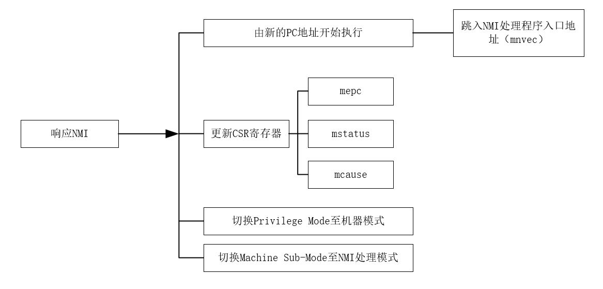

For more comprehensive information, please visit www.riscv-mcu.comwww.riscv-mcu.com
This PDF document is maintained inhttps://github.com/nucleisys/Bumblebee_Core_Doc
Bumblebee Core Architecture Manual
1. Introduction of the Instruction Set and CSRs of the Bumblebee CORE
The Bumblebee Processor Core, or Bumblebee core for short，is a commercial RISC-V processor core customized by Nuclei System Technology and Gigadevice for general-purpose MCU products for IoT or other ultra-low-power applications. It is dedicated to MCU products of model GD32VF103.
For an introduction to the hardware features of the Bumblebee Core, please refer to the Datasheet for Bumblebee Processor Core. This documentation provides a detailed introduction to the Bumblebee Processor Core supported instruction set architecture.
Note: The Bumblebee core used for this MCU is jointly developed by Nuclei System Technology and Andes Technology. Nuclei System Technology provides authorization services and technical support.
At present, Nuclei System Technology can authorize fully domestically controllable N200 series ultra-low power commercial processor core IPs, as well as other multiple series (300/600/900 series) 32-bit or 64-bit high-performance embedded processor core IPs, and provide customers with processor IP customization services.
1.1. Introduction of the RISC-V Instruction Set Architecture
The Bumblebee Core is designed based on the RISC-V Instruction Set Manual Volume I: User-Level ISA Version 2.2 (riscv-spec-v2.2.pdf). Users can register and access the full text(https://riscv.org/specifications/) for free on the RISC-V Foundation website.
1.2.Instruction Subset Supported by the Bumblebee Core
RISC-V has been designed to support extensive customization and specialization. The base integer ISA can be extended with one or more optional instruction-set extensions. The instruction sets supported by the Bumblebee Core are the followings:
RV32 Architecture: 32-bit address space, and 32-bit general purpose registers.
-I: Supports 32 general purpose registers.
-M: Supports the RISC-V standard multiplication and division instructions.
-C: Supports the RISC-V standard compressed instructions, which reduces code size by adding short 16-bit instruction encodings for common operations.
-A: Supports the RISC-V standard atomic instructions.
According to the RISC-V standard naming convention, the combination of these above instruction extensions can be represented as RV32IMAC。
1.3. Control and Status Registers
Some control and status registers (CSRs) are defined in the RISC-V architecture to configure or record some execution status of the core. CSRs are registers internal to the core, which are accessed using a dedicated 12-bit address space.
2. The Privilege Modes of The Bumblebee Core
2.1. Introduction
The Bumblebee Core is designed based on The RISC-V Instruction Set Manual Volume II: Privileged Architecture Version 1.10 (riscv-privileged-v1.10.pdf). Users can register and access the full text (https://riscv.org/specifications/) for free on the RISC-V Foundation website.
2.2. Privilege Modes
The Bumblebee Core supports two privilege modes:
Machine Mode is the mandatory privilege mode, which is encoded as 0x3.
User Mode is configurable, which is encoded as 0x0.
2.2.1. Machine Mode
Machine Mode of the Bumblebee Core has the following features:
- The privilege mode of the core is Machine Mode after a reset by default.
- Machine Mode has the accessibility to all CSRs。
2.2.2. User Mode
User Mode of the Bumblebee Core has the following features：
- User Mode only has the accessibility to a part of the CSRs. Please see Section 7.3 for more details
2.2.3. Machine Sub-Mode
Machine Mode of the Bumblebee Core has 4 sub-mode, named Machine Sub-Mode:：
- Normal Mode（Machine Sub-Mode as 0x0）：
- The core is in this sub-mode after a reset. The core will work in this sub-mode until it encounters an exception, NMI or interrupt。
-Exception Handling Mode（Machine Sub-Mode as 0x2）： - The core is in this sub-mode when it is handling an exception. - Please see Chapter 3 for details about the exception operation.
NMI Handling Mode（Encoded as 0x3）： - The core is in this sub-mode when it is handling an NMI. - Please see Chapter 4 for details about the NMI operation.
- Interrupt Handling Mode（Encoded as 0x1）： - The core is in this sub-mode when it is handling an interrupt. - Please see Chapter 5 for details about the interrupt operation.
The TYP field of the CSR msubm indicates the current Machine Sub-Mode of the core. Therefore, the software can read this CSR to lookup the current Machine Sub-Mode. For more details about the CSR msubm, please refer to the Section 7.5.3.
Note: In the RISC-V architecture, the taking of an exception, NMI or interrupt are collectively Trap.
2.2.4. Read the Execution Mode
The key points of reading the execution mode are the following:：
- According to the architecture definition of the RISC-V, there is no register can reflect what is current privilege mode of the core, so the software cannot access the information about current privilege mode - The Bumblebee Core has 4 Machine Sub-Modes which are indicated in the TYP filed of the CSR msubm, so the software can access this CSR to read current Machine Sub-Mode
2.2.5. Switching from Machine Mode to User Mode
The mret instruction can be executed directly in Machine Mode. Switching from Machine Mode to User Mode can only be done by executing the mret instruction. As described in Section 2.2.3, the Machine Mode may be in four different status as the followings:：
- If the core is in normal machine mode, the hardware behavior of executing the mret instruction is the same as executing the mret instruction in exception handling mode, please see Section 3.5 for details - Therefore, if you want to switch from Machine Mode to User Mode in normal machine mode, you need to modify the value of the MPP field in the CSR mstatus first, and then execute the mret instruction to complete the switching. A typical program code looks like the followings：
/* Switch Machine sub-mode to User mode */
li t0， MSTATUS_MPP // the value of MSTATUS_MPP is 0x00001800，proper mstatus MPP field bit
// for more about mstatus register Section 7.4.7
csrc mstatus, t0 // set mstatus registe MPP bit to 0
la t0， 1f // set the PC address of the former tag 1 value to t0
csrw mepc, t0 // set t0 value to mepc CSR register
mret // mret，turn the mode toUser Mode，and begin in the address tag 1
1: // the address of tag 1
- If the core is in exception handling mode, please see Section 3.5 for the details about the hardware operation of mret execution.
- Commonly, mret is used to exit from exception handling mode and restore the previous execution mode.
- If the software intends to exit from Machine Mode to User Mode (or normal machine mode), the software needs to modify the value of MPP field of the CSR mstatus, and then execute an mret instruction.
- If the core is in interrupt handling mode, please see Section 5.7 for the details about the hardware operation of mret execution.
- Commonly, mret is used to exit from interrupt handling mode and restore the previous execution mode.
- If the software intends to exit from Machine Mode to User Mode (or normal machine mode), the software needs to modify the value of MPP field of the CSR mstatus, and then execute an mret instruction.
- If the core is in NMI handling mode, please see Section 4.4 for the details about the hardware operation of mret execution.
- Commonly, mret is used to exit from NMI handling mode and restore the previous execution mode.
- If the software intends to exit from Machine Mode to User Mode (or normal machine mode), the software needs to modify the value of MPP field of the CSR mstatus, and then execute an mret instruction.
Note：
- Execution of mret in User Mode will raise an illegal instruction exception.
2.2.6. Switching from User Mode to Machine Mode
The Bumblebee Core can only switch from User Mode to Machine Mode by taking an exception, interrupt or NMI:：
- Taking an exception and enter exception handling mode, please see Section 3.4 for more details.
- Note: The software can execute an ecall instruction to enter the exception handler of ecall.
- Taking an interrupt and enter interrupt handling mode, please see Section 5.6 for more details.
- Taking an NMI and enter NMI handling mode, please see Section 4.3 for more details
2.2.7. Interrupts, Exceptions and NMIs Preemption
An interrupt can preempt another interrupt, and an exception can preempt another exception, but NMI cannot preempt another NMI:
- If the core is in NMI handling mode, and it encounters another NMI, then the new NMI will be masked. Therefore, NMI cannot preempt another NMI. Please see Section 4.6 for more details.。
- If the core is in exception handling mode, and it encounters another exception, then an exception preemption will happen. Please see Section 3.5 for more details.
- If the core is in interrupt handling mode, and it encounters another interrupt, then an interrupt preemption will happen. Please see Section 5.11 for more details.
- Preemption also happens among interrupts, exceptions and NMIs as the followings:
- If the core is in interrupt handling mode, and it encounters an exception, then the core will enter exception handling mode.
- If the core is in NMI handling mode, and it encounters an exception, then the core will enter exception handling mode.
- If the core is in interrupt handling mode, and it encounters an NMI, then the core will enter NMI handling mode.
- If the core is in exception handling mode, and it encounters an NMI, then the core will enter NMI handling mode.
- Note: The global interrupt-enable bit MIE is clear by hardwire when the core is in exception/NMI handling mode, so the core will not take any interrupt.
The Bumblebee Core implements a “Two Levels of NMI/Exception State Save Stacks” to ensure that the core can restore the context of the previous state before taking a preemption between exceptions and NMIs. Please see Section 4.6 for more details.
2.3. Physical Memory Protection（PMP）
Since the Bumblebee Core is a low-power core designed for microcontrollers, it does not support the Memory Management Unit, so all the address access operations are using physical addresses. In order to perform memory access protection and isolation according to memory physical address of different devices and execution privilege mode, the RISC-V standard architecture defines a physical memory protection mechanism: Physical Memory Protection (PMP) unit.
Note: the Bumblebee Core does not support PMP unit.
3. Exception Operation of the Bumblebee Core
3.1. Introduction of Exception
Exception mechanism, is that the processor core suddenly encounters an abnormal event when executing the program instruction stream, and aborts execution of the current program, and turns to handle the exception instead. The key points are as follows:
- The “abnormal event” which the core encounters is called an exception. An exception is caused by an internal event in the core or an event during the execution of the program, such as a hardwire failure, a program failure, or the execution of a special system service instruction. In short, it is a core-internal issue.
- When the exception is taken, the core will enter the exception handler program.
3.2. Exception Masking
In the RISC-V architecture, exception is not maskable, which means if the core encounters an exception, it must stop current execution and turns to handle the exception.
3.3. Priority of Exception
It is possible that the core encounters multiple exceptions at the same time, so exceptions also have priority. The priority of the exception is shown in Table 3-1. The smaller the exception code, the higher the priority of the exception
3.4. Entering Exception Handling Mode
Taking an exception, hardware behaviors of the Bumblebee Core are described as below. Note that the following operations are done simultaneously in one cycle:
Stop the execution of the current program, and start from the PC address defined by the CSR mtvec.
Update the following CSR registers:
- mcause（Machine Cause Register）
- mepc（Machine Exception Program Counter）
- mtval（Machine Trap Value Register ）
- mstatus（Machine Status Register）
- Update Privilege Mode and Machine Sub-Mode。
The overall process of exception is shown in Figure 3-1.

These will be detailed in the following parts
3.4.1. Execute form the PC Defined by mtvec
The Bumblebee Core jumps to the PC defined by the CSR mtvec after encountering an exception.
The CSR mtvec is a both readable and writeable CSR register, so the software can modify its value. The detailed format of this CSR is shown in Table 7-3.
3.4.2. Update the CSR mcause
When the Bumblebee Core takes one exception, the CSR mcause is updated (hardware automatically) simultaneously to indicate the type of encountered exception. The software can read this register to query the specific cause of the exception.
The format of mcause is shown in Table 7-6, where the lower 5 bits are the encoding filed of the exception, which is used to indicate the type of exceptions, as shown in Table 3-1.
| Exception Code | Error and | Async/Sync | Description |
|---|---|---|---|
| 0 | Instruction address misaligned | Sync | The instruction PC address is not aligned. Note: This exception type is not possible in processors configured with a subset of "C" extension instructions. |
| 1 | Instruction access fault | Sync | Instruction access fault. |
| 2 | Illegal instruction | Sync | Illegal instruction |
| 3 | Breakpiont | Sync | The RISC-V architecture defines the EBREAK instruction, which occurs when the processor executes the instruction and enters the exception service routine. This instruction is often used by the debugger (Debugger), such as setting breakpoints. |
| Load address misaligned | Sync | Load instruction fetch address is not aligned. Note: The Bumblebee kernel does not support data memory read and write operations with unaligned addresses, so this exception is raised when the access address is not aligned. | |
| 5 | Load access fault | Not precise Async | Load access fault |
| 6 | Store/AMO address misaligned | Sync | Store or AMO instruction fetch address is not aligned. Note: The Bumblebee kernel does not support data memory read and write operations with unaligned addresses, so this exception is raised when the access address is not aligned. |
| 7 | Store/AMO access fault | Not precise Async | Store or AMO instruction access fault. |
| 8 | Environment call from U-mode | Sync | User Mode execute the ecall instruction. The RISC-V architecture defines an ecall instruction that will enter the exception service routine when the processor executes the instruction. This instruction is often used by software to force entry into the exception mode. |
| 11 | Environment call from M-mode | Sync | Machine Mode execute the ecall instruction. The RISC-V architecture defines an ecall instruction that will enter the exception service routine when the processor executes the instruction. This instruction is often used by software to force entry into the exception mode. |
3.4.3. Update the CSR mepc
The return address when the Bumblebee Core exit the exception handler is stored in the CSR mepc. When the core takes an exception, the hardware will update the CSR mepc automatically, and the value in this CSR will be the return address when exit the exception handler. After handling the exception, the PC value is restored from this CSR to return to the execution point that was previously stopped.
Note:
- When an exception is taken into M-mode, mepc is written with the PC address of the instruction that encountered the exception.
- Although the CSR mepc can be updated automatically encountering an exception, it is a both readable and writeable register, so the software can modify it explicitly.
3.4.4. Update the CSR mtval
When the Bumblebee Core takes an exception, the hardware will update the CSR mtval (Machine Trap Value Register) automatically to indicate the memory access address or instruction encoding that caused the current exception:
- When a hardware breakpoint is triggered, or an instruction-fetch, load, or store address-misaligned, access, or page-fault exception occurs, mtval is written with the faulting effective address.
- On an illegal instruction trap, mtval is written with the first 32 bits of the encoding of the faulting instruction.
3.4.5. Update the CSR mstatus
The format of the CSR mstatus is shown in Table 7-2. When the Bumblebee Core takes one exception, the hardware will update some fields of the CSR mstatus (Machine Status Register) automatically:
- The value of mstatus.MPIE will be updated as the previous value of mstatus.MIE before taking the exception, as described in Section 8.2. The value of mstatus.MPIE is used to restore the previous value of mstatus.MIE after handling the exception.
- The value of mstatus.MIE will be updated to 0 (which means the global interrupt is disabled and all the interrupts are masked)
- The value of mstatus.MPP will be updated to the Privilege Mode before taking the exception, as described in Section 8.2. The value of mstatus.MPP is used to restore the previous Privilege Mode after handling the exception.
3.4.6.Update the Privilege Mode
Exceptions are handled in Machine Mode. Once an exception is taken, the privilege mode of the core will be updated to Machine Mode.
3.4.7. Update Machine Sub-Mode
The Machine Sub-Mode of the Bumblebee Core is indicated in the msubm.TYP filed in real time. When the core takes an exception, the Machine Sub-Mode will be updated to exception handling mode, so:
- The value of msubm.PTYP will be updated to the value of msub.TYP before taking the exception, as shown in Figure 3.2. The value of msubm.PTYP will be used to restore the value of msubm.PTYP after exiting the exception handler.
- The filed msubm.TYP is updated to exception handling mode, as shown in Figure 3.2, to reflect the current Machine Sub-Mode is “exception handling mode”.

3.5. Exit the Exception Handling Mode
After handling the exception, the core needs to exit from the exception handler eventually.
Since the exception is handling in Machine Mode, the software has to execute mret to exit the exception handler. The hardware behavior of the processor after executing mret instruction is as follows. Note that the following hardware behaviors are done simultaneously in one cycle:
- Stop the execution of the current program, and start from the PC address defined by the CSR mepc.
- Update the CSR mstatus (Machine Status Register), as described in Figure 3-2, and update the Privilege Mode and the Machine Sub-Mode.
The overall process of exiting an exception is shown in Figure 3-3

These will be detailed in the following parts.
3.5.1. Executing form the Address Defined by mepc
Taking an exception, the CSR mepc is updated at the same time to store the PC value of the instruction that encountered the exception. Through this mechanism, it means that the core returns to the PC address of the instruction that encountered the exception when executes the mret instruction. So that the aborted program is continued to execute.
Note: It may be necessary to update the value of mepc by software before exiting an exception. For example, if the exception is raised by an ecall or ebreak instruction, then the value of mepc is updated to the pc of the ecall or ebreak instruction. If the exception exit without modify the value of mepc, then it will jump back to the ecall or ebreak instruction again, causing an infinite loop (executing the ecall or ebreak instruction and raising a same exception). The correct way is to change the value of mepc to the next instruction to the ecall or ebreak by software in the exception handler. Since ecall/ebreak is a 4-byte instruction, it is reasonable to rewrite the mepc=mepc+4.
3.5.2. Update the CSR mstatus
The format of the CSR mstatus is shown in Table 7-2. After executing one mret instruction, the hardware will update some fields of the CSR mstatus:
- The value of mstatus.MIE is restored by the value of mstatus.MPIE.
- The value of mstatus.MPIE is updated to 1.
- The updated value of mstatus.MPP is divided into the following two cases:
- When User Mode is configured, mstatus.MPP is updated to 0x0.
- When User Mode is not configured, mstatus.MPP is updated to 0x11.
Taking an exception, the value of mstatus.MPIE will be updated to the value of mstatus.MIE before taking the exception, as described in Figure 3-2. The value of mstatus.MIE will be restored by the value of mstatus.MPIE after the execution of mret. Through this mechanism, it means that after the execution of mret, the value of mstatus.MIE is restored to the previous value before taking the exception (assuming the previous value of mstatus.MIE is 1, it means that the global interrupt-enable bit is set).
3.5.3.Update the Privilege Mode
Taking an exception, the value of mstatus.MPP was updated to the Privilege Mode of the core before taking the exception, and after executing the mret instruction, the value of Privilege Mode is restored by the value of mstatus.MPP, as described in Figure 3-2. Through this mechanism, the core is guaranteed to return to the Privilege Mode before taking the exception.
3.5.4. Update the Machine Sub-Mode
The value of msubm.TYP indicates the Machine Sub-Mode of the Bumblebee Core in real time. After executing the mret instruction, the hardware will automatically restore the core’s Machine Sub-Mode by the value of msubm.PTYP:
- Taking an exception, the value of msubm.PTYP is updated to the Machine Sub-Mode before taking the exception. After executing the mret instruction, the hardware will automatically restore the Machine Sub-Mode using the value of msubm.PTYP, as shown in Figure 3-2. Through this mechanism, the Machine Sub-Mode of the core is restored to the same mode before taking the exception.
3.6. Exception Service Routine
When the core takes one exception, it starts to execute the program starting at the address defined by mtvec, and this program is usually an exception service routine. The program can decide to jump further to the specified exception service routine by querying the exception code in the CSR mcause. For example, if the exception code in mcause is 0x2, which indicates that this exception is caused by an illegal instruction, then it can jump to the specific handler for illegal instruction fault.
Note: Since there is no hardware to save and restore the execution context automatically when take or exit an exception, so the software needs to explicitly use the instruction (in assembly language) for context saving and restoring. Please refer to a complete exception service routine of the specified MCU chip.
3.7. Exception Preemption
The Bumblebee Core supports two levels of NMI/Exception State Save Stacks. Please See Section 4.6 for more details.
4. NMI Operation of the Bumblebee Core
4.1. Introduction of NMI
NMI (Non-Maskable Interrupt) is a special input signal of the processor, often used to indicate system-level emergency errors (such as external hardware failures, etc.) After encountering the NMI, the processor should abort execution of the current program immediately and process the NMI error instead.
4.2. NMI Masking
In the RISC-V architecture, NMI is not maskable, which means if the core encounters an NMI, it must stop current execution and turns to handle the NMI.
4.3. Entering NMI Handling Mode
Taking an NMI, hardware behaviors of the Bumblebee Core are described as below. Note that the following operations are done simultaneously in one cycle:
- Stop the execution of the current program, and start from the PC address defined by the CSR mnvec.
- Update the following CSR registers:
- mepc（Machine Exception Program Counter ）
- mstatus（Machine Status Register）
- mcause（Machine Cause Register）
- Update the Privilege Mode and Machine Sub-Mode of the core.
- The overall process of NMI is shown in Figure 4-1.

These will be detailed in the following parts.
4.3.1. Execute from the PC Defined by mnvec
The Bumblebee Core jumps to the PC defined by the CSR mnvec after encountering an NMI. The CSR mnvec has two potential values:：
- When mmisc_ctl[9]=1, the value of mnvec is equal to the value of mtvec, which means NMIs and exceptions share the same trap entry address.
- When mmisc_ctl[9]=0, the value of mnvec equals to the value of reset_vector which is the pc value after a reset.
4.3.2. Update the CSR mepc
The return address when the Bumblebee Core exit the NMI handler is stored in the CSR mepc. When the core takes an NMI, the hardware will update the CSR mepc automatically, and the value in this CSR will be the return address when exit the NMI handler. After handling the NMI, the PC value is restored from this CSR to return to the execution point that was previously stopped.
Note：
- When an NMI is taken, the CSR mepc is updated to the PC of the next instruction of the one encountered the NMI (Because the instruction encounters the NMI has been executed correctly). Then after exiting the NMI, the program will continue to execute from the next instruction of the instruction that encounters the NMI.
- Although the CSR mepc can be updated automatically encountering an NMI, it is a both readable and writeable register, so the software can modify it explicitly.
4.3.3. Update the CSR mcause
The format of the CSR mcause is shown in Table 7-6. The Bumblebee Core will save the ID of the trap into the CSR mcause by the hardware automatically when take a trap. The value of mcause indicates the reason of trap. Interrupts, exceptions and NMIs all have their own specified Trap ID. The Trap ID of NMI has two potential values:
- When mmisc_ctl[9]=1，the Trap ID of NMI is 0xfff.
- When mmisc_ctl[9]=0，the Trap ID of NMI is 0x1.
The software can recognize the Trap reason querying the Trap ID, and build the corresponding trap handler program for different types of traps.
4.3.4. Update the CSR mstatus
The format of the CSR mstatus is shown in Table 7-2. When the Bumblebee Core takes one NMI, the hardware will update some fields of the CSR mstatus (Machine Status Register) automatically:
- The value of mstatus.MPIE will be updated as the previous value of mstatus.MIE before taking the NMI, as described in Section 8.2. The value of mstatus.MPIE is used to restore the previous value of mstatus.MIE after handling the NMI.
- The value of mstatus.MIE will be updated to 0 (which means the global interrupt is disabled and all the interrupts are masked)
- The value of mstatus.MPP will be updated to the Privilege Mode before taking the NMI, as described in Section 8.2. The value of mstatus.MPP is used to restore the previous Privilege Mode after handling the NMI.
4.3.5. Update the Privilege Mode
NMI is handed in Machine Mode, so the privilege mode will be switched to Machine Mode when the core takes an NMI.
4.3.6. Update the Machine Sub-Mode
The Machine Sub-Mode of the Bumblebee Core is indicated in the msubm.TYP filed in real time. When the core takes an NMI, the Machine Sub-Mode will be updated to NMI handling mode, so:
- The value of msubm.PTYP will be updated to the value of msub.TYP before taking the NMI, as shown in Figure 4-2. The value of msubm.PTYP will be used to restore the value of msubm.PTYP after exiting the NMI handler.
- The filed msubm.TYP is updated to NMI handling mode, as described in Figure 4-2, to reflect the current Machine Sub-Mode is “NMI handling mode”.

4.4. Exit the NMI Handling Mode
After handling the NMI, the core needs to exit from the NMI handler eventually, and return to execute the main program.
Since the NMI is handling in Machine Mode, the software has to execute mret to exit the NMI handler. The hardware behavior of the processor after executing mret instruction is as follows. Note that the following hardware behaviors are done simultaneously in one cycle:
- Stop the execution of the current program, and start from the PC address defined by the CSR mepc.
- Update the CSR mstatus (Machine Status Register).
- Update the Privilege Mode and the Machine Sub-Mode.
The overall process of exiting an NMI is shown in Figure 4-3.

These will be detailed in the following parts.
4.4.1. Executing from the Address Defined by mepc
When an NMI is taking, the mepc is updated to the PC value of the next instruction. Through this mechanism, executing the mret instruction, the core will return to the next instruction of the instruction encountered the NMI, and continue to execute the program.
4.4.2. Update the CSR mstatus
The format of the CSR mstatus is shown in Table 7-2. After executing one mret instruction, the hardware will update some fields of the CSR mstatus:
- The value of mstatus.MIE is restored by the value of mstatus.MPIE.
- The value of mstatus.MPIE is updated to 1.
- The updated value of mstatus.MPP is divided into the following two cases:
- When User Mode is configured, mstatus.MPP is updated to 0x0.
- When User Mode is not configured, mstatus.MPP is updated to 0x11.
Taking an NMI, the value of mstatus.MPIE will be updated to the value of mstatus.MIE before taking the NMI, as shown in Figure 8.2. The value of mstatus.MIE will be restored by the value of mstatus.MPIE after the execution of mret. Through this mechanism, it means that after the execution of mret, the value of mstatus.MIE is restored to the previous value before taking the NMI (assuming the previous value of mstatus.MIE is 1, it means that the global interrupt-enable bit is set).
4.4.3. Update the Privilege Mode
Taking an NMI, the value of mstatus.MPP was updated to the Privilege Mode of the core before taking the NMI, and after executing the mret instruction, the value of Privilege Mode is restored by the value of mstatus.MPP, as described in Figure 4 2. Through this mechanism, the core is guaranteed to return to the Privilege Mode before taking the NMI.
4.4.4. Update the Machine Sub-Mode
The value of msubm.TYP indicates the Machine Sub-Mode of the Bumblebee Core in real time. After executing the mret instruction, the hardware will automatically restore the core’s Machine Sub-Mode by the value of msubm.PTYP:
- Taking an NMI, the value of msubm.PTYP is updated to the Machine Sub-Mode before taking the NMI. After executing the mret instruction, the hardware will automatically restore the Machine Sub-Mode using the value of msubm.PTYP, as shown in Figure 4 2. Through this mechanism, the Machine Sub-Mode of the core is restored to the same mode before taking the NMI.
4.5. NMI Service Routine
When the core takes an NMI, it will jump to execute the program at the address defined by mnvec, which is usually the NMI service routine.
Note：Since there is no hardware to save and restore the execution context automatically when take or exit an NMI, so the software needs to explicitly use the instruction (in assembly language) for context saving and restoring. Please refer to a complete NMI service routine of the specified MCU chip.
4.6. NMI/Exception Preemption
The Bumblebee Core has implemented self-defined Two Levels of NMI/Exception State Save Stacks which can save up to 3-level NMI/Exception core execution states. This implementation supports 2-level recoverable NMI/Exception preemption.
Note： Since NMI is masked when the core is in NMI handling mode, one NMI cannot preempt another NMI. The Bumblebee Core can support 3 kinds of NMI/Exception preemption:
- An NMI preempts an exception
- An exception preempts another exception
- An exception preempts another NMI

4.6.1. Enter NMI/Exception Preemption
When take an NMI or exception, hardware behaviors of the Bumblebee Core are described in the Figure4-4。
- Stop executing the current program, and jump to a new PC to execute.
- If it is an exception trap, then the jump target PC is the address defined in mtvec.
- If it is an NMI trap, then the jump target PC is the address defined in mnvec.
- Updates the following relevant CSRs’ specified fields:
- mepc: record the PC encountered the handling NMI/Exception, and can be used to restore the PC after exiting the handling NMI/Exception.
- msaveepc1: the first level NMI/Exception State Save Stack, records the PC encountered the first level preempted NMI/Exception which is preempted by the handling NMI/Exception. This CSR is used to restore the value of mepc when the core returns from the handling NMI/Exception.
- msaveepc2: the second level NMI/Exception State Save Stack, records the PC encountered the second level preempted NMI/Exception which is preempted by the first level preempted NMI/Exception. This CSR is used to restore the value of msaveepc1 when the core returns from the handling NMI/Exception.
- mstatus:
- MPIE: save the value of MIE before taking the handling NMI/Exception.
- MPP: save the value of Privilege Mode before taking the handling NMI/Exception.
- msavestatus:
- MPIE1: the first level NMI/Exception State Save Stack, records the value of MIE when encountered the first level preempted NMI/Exception which is preempted by the handling NMI/Exception. This CSR is used to restore the value of MPIE when the core returns from the handling NMI/Exception.
- MPIE2: the second level NMI/Exception State Save Stack, records the value of MIE when encountered the second level preempted NMI/Exception which is preempted by the first level preempted NMI/Exception. This CSR is used to restore the value of MPIE1 when the core returns from the handling NMI/Exception.
- MPP1: the first level NMI/Exception State Save Stack, records the Privilege Mode when encountered the first level preempted NMI/Exception which is preempted by the handling NMI/Exception. This CSR is used to restore the value of MPP when the core returns from the handling NMI/Exception.
- MPP2: the second level NMI/Exception State Save Stack, records the Privilege Mode when encountered the second level preempted NMI/Exception which is preempted by the first level preempted NMI/Exception. This CSR is used to restore the value of MPP1 when the core returns from the handling NMI/Exception.
- mcause: save the cause of the handling NMI/Exception.
- msavecause1: the first level NMI/Exception State Save Stack, records the trap cause when encountered the first level preempted NMI/Exception which is preempted by the handling NMI/Exception.
- msavecause2: the second level NMI/Exception State Save Stack, records the trap cause when encountered the second level preempted NMI/Exception which is preempted by the first level preempted NMI/Exception.
- msubm:
- TYP：save the trap type of the current handling NMI/Exception.
- PTYP: save the trap type before taking the handling NMI/Exception.
- PTYP1:the first level NMI/Exception State Save Stack, records the Machine Sub-Mode when encountered the first level preempted NMI/Exception which is preempted by the handling NMI/Exception. This CSR is used to restore the value of PTYP when the core returns from the handling NMI/Exception.
- PTYP2：the second level NMI/Exception State Save Stack, records the Machine Sub-Mode when encountered the second level preempted NMI/Exception which is preempted by the first level preempted NMI/Exception. This CSR is used to restore the value of PTYP1 when the core returns from the handling NMI/Exception.
- NMI/Exception is handling in Machine Mode, so the Privilege Mode will be switched to the Machine Mode when the core take one NMI/Exception.
4.6.2.Exit NMI/Exception Preemption
After handling the NMI/Exception, the core needs to exit from the NMI/Exception handler eventually, and return to execute the main program or handle the next level preempted NMI/Exception. Before exit the current NMI/Exception handler, the relevant CSRs and core status need to be restored by executing the mret instruction. The hardware behavior of the processor after executing mret instruction are shown in Figure 4 4, which can be described in short as the follows:
- Stop the execution of the current program, and start from the PC address defined by the CSR mepc.
- Update some fields of the relevant CSRs as the follows:：
- mepc（Machine Exception Program Counter）:update to the value saved in msaveepc1, which is the PC encountered the first level preempted NMI/Exception.
- msaveepc1：the first level NMI/Exception State Save Stack, update to the value of msaveepc2, which is the PC encountered the second level preempted NMI/Exception. mstatus（Machine Status Register）
- mstatus（Machine Status Register）
- MPIE：update to the value of MPIE1, which is the value of MIE when the core encountered the first level preempted NMI/Exception.
- MPP: update to the value of MPP1, which is the Privilege Mode when the core encountered the first level preempted NMI/Exception.
- msavestatus:
- MPIE1：the first level NMI/Exception State Save Stack, update to the value of msavestatus.MPIE2 which is the value of MIE when the core encountered the second level preempted NMI/Exception.
- MPP1：the first level NMI/Exception State Save Stack, update to the value of msavestatus.MPP2 which is the Privilege Mode when the core encountered the second level preempted NMI/Exception.
- mcause（Machine Cause Register）： update to the value of msavecause1 which is the cause of the first preempted NMI/Exception.
- msavecause1：the first level NMI/Exception State Save Stack, update to the value of msavecause2 which is the cause of the second level preempted NMI/Exception.
- msubm（Machine Sub-Mode Register）
- TYP：update to the value of msubm.PTYP which is the trap type of the handling NMI/Exception.
- PTYP: update to the value of msubm.PTYP1 which is the trap type of the first level preempted NMI/Exception.
- PTYP1: the first level NMI/Exception State Save Stack, updates to the value of msubm.PTYP2 which is the trap type of the second level preempted NMI/Exception when one mret is executed.
- According to the value of mstatus.MPP to update the Privilege Mode.
5. 5.Interrupt Operation of the Bumblebee Core
5.1. Introduction of Interrupt
Interrupt mechanism, that is, the core is suddenly interrupted by other requests during the execution of the current program, and the current program is stopped, and then the core turns to handle other requests. After handling other requests, the core goes back and continue to execute the previous program. The key points of interrupts are the followings:
- The “other request” interrupts the processor core is called Interrupt Request. The source of this request is called the Interrupt Source. The interrupt s0urce is usually comes from outside the core which is called the External Interrupt Source, but some of the interrupt sources are core-internal, which are called the Internal Interrupt Sources.
- The program used to handle the “other request” is called the Interrupt Service Routine (ISR).
- Interrupt mechanism is a normal mechanism, not an error situation. Once the core receives an interrupt request, it needs to save the context of the current execution status, which is referred as “context saving”. After processing the request, the core needs to restore the previous status, thereby continuing to execute the previously interrupted program, referred to “context restoring”.
- There may be multiple interrupt sources that simultaneously initiate requests to the core, and an arbitration is needed to select one from these sources to determine which interrupt source is prioritized. This scenario is called “interrupt arbitration”, and different interrupts can be assigned levels and priorities to facilitate the arbitration, so there is a concept of “interrupt level” and “interrupt priority”.
5.2. Enhanced Core Local Interrupt ControllerECLIC
As described in Section 7.4.13, the Bumblebee Core supports the “default interrupt mode” and “ECLIC interrupt mode” by different software configurations. Herein only the “ECLIC interrupt mode” is introduced.
The Bumblebee Core has implemented with the Enhanced Core Local Interrupt Controller which can be used to manage multiple interrupt sources. All types of interrupts in the Bumblebee Core (except for debug interrupts) are managed by ECLIC. See Section 6.2 for details of ECLIC. See Section 5.3 for an introduction to all interrupt types supported by the Bumblebee Core.。
5.3. Interrupt Type
The types of interrupts supported by the Bumblebee Core are shown in Figure 5-1.

These will be detailed in the following parts。
5.3.1. External Interrupt
An external interrupt is an interrupt initiated from outside the core. External interrupts allow user to connect to an external interrupt source, such as an interrupt generated by an external device like UART, GPIO and so on.
Note：The Bumblebee Core supports multiple external interrupt sources, all of which are managed by the ECLIC.
5.3.2. Internal Interrupt
The Bumblebee Core has several core-internal private interrupts as the followings:
- Software Interrupt
- Timer Interrupt
Note：The internal interrupts of the Bumblebee Core are also managed by the ECLIC.
5.3.2.1 Software Interrupt
The key points of the software interrupt are the followings：
- The Bumblebee Core implements a TIMER unit, and an msip register is defined in the TIMER unit, through which software interrupts can be generated. Please see Section 6.1.6 for details.
- Note: Software interrupts are also managed by the ECLIC.
5.3.2.2 Timer Interrupt
The key points of the software interrupt are the following:
- The Bumblebee Core implements a TIMER unit, and a counter is defined in the TIMER unit, through which time interrupts can be generated. Please see Section 6.1.5 for details. generated. Please see Section 6.1.6 for details.
- Note: Timer interrupts are also managed by the ECLIC.
5.3.2.3 Memory Access Error Interrupt
The key points of the interrupt conversed by “Memory Access Error Exception” are as follows:
- When the Bumblebee Core encounters a “Memory Access Error Exception”, it dose not generate an exception, but instead convert it to the corresponding internal interrupt, which is handled as an interrupt.
5.4. Interrupt Masking
5.4.1. Global Interrupt Masking
Interrupts can be masked by the control bit MIE in the CSR mstatus of the Bumblebee Core. Please see Section 7.4.8 for details
5.4.2. Specified Interrupt Masking
For different interrupt sources, ECLIC assigns its own interrupt enable register to each interrupt sources. Users can configure the corresponding ECLIC register to manage some specified interrupt sources. Please see Section 6.2.6 for details.
5.5. Interrupt Levels, Priorities and Arbitration
When multiple interrupts are initiated at the same time, an arbitration is required. For the Bumble Core, the ECLIC manages all interrupts. ECLIC assigns its own interrupt level and priority registers to each interrupt source. Users can configure the ECLIC registers to manage the level and priority of the specified interrupt sources. When multiple interrupts occur simultaneously, the ECLIC will select the one has the highest priority to be taken, as shown in Figure 5-2. Please see Section 6.2.9 for more details.

5.6. Entering Interrupt Handling Mode
Taking an interrupt, hardware behaviors of the Bumblebee Core are described as below. Note that the following operations are done simultaneously in one cycle:
- Stop the execution of the current program, and jump to another PC to execute.
- mepc（Machine Exception Program Counter）
- mstatus（Machine Status Register）
- mcause（Machine Cause Register）
- mintstatus （Machine Interrupt Status Register）
- Update the Privilege Mode and Machine Sub-Mode of the core.
- The overall process of interrupt is shown in Figure5-3

These will be detailed in the following parts.
5.6.1. Execute from a new PC
Each interrupt source of the ECLIC can be set to vectored or non-vectored interrupt (via the shv filed of the register clicintattr[i]). The key points are as follows:
- If the interrupt is configured as a vectored interrupt, then the core will jump to the corresponding target address of this interrupt in the Vector Table Entry when this interrupt is taken. For details about the Interrupt Vector Table, please refer to Section 5.8. For details of the vectored processing mode, please refer to Section 5.13.2.
- If the interrupt is configured as a non-vectored interrupt, then the core will jump to a common base address shared by all interrupts. For details of the non-vectored processing mode, please refer to Section 5.13.1.
5.6.2.Update the Privilege Mode
The privilege mode will be switched to Machine Mode when the core takes an Interrupt.
5.6.3. Update the Machine Sub-Mode
The Machine Sub-Mode of the Bumblebee Core is indicated in the msubm.TYP filed in real time. When the core takes an interrupt, the Machine Sub-Mode will be updated to interrupt handling mode, so:
- The value of msubm.PTYP will be updated to the value of msub.TYP before taking the interrupt as shown in Figure 5 4. The value of msubm.PTYP will be used to restore the value of msubm.PTYP after exiting the interrupt handler.
- The filed msubm.TYP is updated to interrupt handling mode, as described in Figure 5-4, to reflect the current Machine Sub-Mode is “interrupt handling mode”.
5.6.4. Update the CSR mepc
The return address when the Bumblebee Core exit the interrupt handler is stored in the CSR mepc. When the core takes an interrupt, the hardware will update the CSR mepc automatically, and the value in this CSR will be the return address when exit the interrupt handler. After handling the interrupt, the PC value is restored from this CSR to return to the execution point that was previously stopped.
Note：
- When an interrupt is taken, the CSR mepc is updated to the PC of the instruction that encounters the interrupt. Then after exiting the interrupt, the program will continue to execute from the instruction that encounters the interrupt.
- Although the CSR mepc can be updated automatically encountering an interrupt, it is a both readable and writeable register, so the software can modify it explicitly.
5.6.5. Update the CSRs mcause and mstatus
The format of the CSR mcause is shown in Table 7-6. The Bumblebee Core will update the CSR mcause by the hardware automatically when take a trap, as shown in Figure 5-4, as follows:
- A mechanism is required to record the ID of the interrupt being taken.
- When an interrupt is taken by the Bumblebee Core, the field mcause.EXCCODE is updated to the ID of the taken interrupt by the ECLIC, so the software can query the ID of this selected interrupt by reading this register.
- The current interrupt is taken, possibly preempting the interrupt was previously being processed (whose interrupt level is relatively lower, so it can be preempted), and a mechanism is needed to record the interrupt level of the preempted interrupt.
- When an interrupt is taken by the Bumblebee Core, the field mcause.MPIL is updated to the value of minstatus.MIL. The value of mcause.MPIL is used to restore the value of mcause.MIL after handling the interrupt.
- The current interrupt is taken, a mechanism is required to record the global interrupt enable bit and the Privilege Mode before taking the interrupt.
- When the Bumblebee Core takes an interrupt, the filed mstatus.MPIE will be updated to the value of mstatus.MIE, and the filed mstatus.MIE will be set to 0, which means interrupts are globally masked, and all interrupts will not be taken.
- When the Bumblebee Core takes an interrupt, the Privilege Mode of the core will be switched to Machine Mode, and the field mstatus.MPP will be set to the Privilege Mode before taking the interrupt.
- If the taken interrupt is a vectored interrupt, the core will jump to the corresponding target address stored in the Vector Table Entry. For a detailed description of the vectored interrupt processing mode, please see Section 5.13.2. In terms of the hardware implementation, the processing of an interrupt needs to be divided into two steps. The first step is to query the target address from the Vector Table, and then jump to the target address in the second step. Then, it is possible that a memory access occurs in the first step, querying the target address from the Vector Table, so a mechanism is required to record such a special memory access error.
- When the Bumblebee Core takes an interrupt, if the interrupt is a vectored mode interrupt, the value of mcause.minhv will be updated to 1, and then cleared to 0 when the above “two-step” operation is completed. Assuming a memory access error occurs midway, it will raise an Instruction Access Fault exception, and the value of mcause.minhv will be 1 assuming this bit is not cleared.。
- Note: the fields mcause.MPIE and mcause.MPP are mirrored with the fields mstatus.MPIE and mstatus.MPP. Which means normally the value of mstatus.MPIE is always the same as the value of mcause.MPIE and the value of mstatus.MPP is the same as the value of mcasue.MPP.。

5.7.Exit the Interrupt Handling Mode
After handling the interrupt, the core needs to exit from the interrupt handler eventually, and return to execute the main program. Since the interrupt is handling in Machine Mode, the software has to execute mret to exit the interrupt handler. The hardware behavior of the processor after executing mret instruction is as follows. Note that the following hardware behaviors are done simultaneously in one cycle:
- Stop the execution of the current program, and start from the PC address defined by the CSR mepc.
- Update the following CSRs as shown in Figure 5-4：
- mstatus（Machine Status Register）
- mcause（Machine Cause Register）
- mintstatus（Machine Interrupt Status Register）
- Update the Privilege Mode and the Machine Sub-Mode。
The overall process of exiting an NMI is shown in Figure 5-5.

These will be detailed in the following parts.
5.7.1. Executing from the Address Defined by mepc
When an interrupt is taking, the mepc is updated to the PC value of the instruction encountered the interrupt. Through this mechanism, executing the mret instruction, the core will return to the instruction encountered the interrupt, and continue to execute the program.
5.7.2. Update the CSRs mcause and mstatus
The format of the CSR mcause is shown in Table 7-6. The Bumblebee Core will update the CSR mcause when executes one mret instruction, as follows:
- When an interrupt is taken, the value of mcause.MPIL will be updated to the value of mintstatus.MIL before taking the interrupt. The hardware will restore the value of minstatus.MIL using the value of mcause.MPIL when executes the mret instruction to exit the interrupt handler. Through this mechanism, the value of mintstatus.MIL is restored to the previous value before taking the interrupt.
- When an interrupt is taken, the value of mcause.MPIE will be updated to the value of mintstatus.MIE before taking the interrupt. The hardware will restore the value of minstatus.MIE using the value of mcause.MPIE when executes the mret instruction to exit the interrupt handler. Through this mechanism, the value of mintstatus.MIE is restored to the previous value before taking the interrupt.
- When an interrupt is taken, the value of mcause.MPP will be updated to the Privilege Mode before taking the interrupt. The hardware will restore the Privilege Mode using the value of mcause.MPP when executes the mret instruction to exit the interrupt handler. Through this mechanism, the Privilege Mode is restored to the previous value before taking the interrupt. - Note: the fields mcause.MPIE and mcause.MPP are mirrored with the fields mstatus.MPIE and mstatus.MPP. Which means normally the value of mstatus.MPIE is always the same as the value of mcause.MPIE and the value of mstatus.MPP is the same as the value of mcasue.MPP.
5.7.3. Update the Privilege Mode
The hardware will update the Privilege Mode using the value of mcause.MPP automatically after the execution of the mret instruction:
- Taking an interrupt, the value of mstatus.MPP was updated to the Privilege Mode of the core before taking the interrupt, and after executing the mret instruction, the value of Privilege Mode is restored by the value of mstatus.MPP. Through this mechanism, the core is guaranteed to return to the Privilege Mode before taking the interrupt.
5.7.4. Update the Machine Sub-Mode
The value of msubm.TYP indicates the Machine Sub-Mode of the Bumblebee Core in real time. After executing the mret instruction, the hardware will automatically restore the core’s Machine Sub-Mode by the value of msubm.PTYP:
- Taking an interrupt, the value of msubm.PTYP is updated to the Machine Sub-Mode before taking the interrupt. After executing the mret instruction, the hardware will automatically restore the Machine Sub-Mode using the value of msubm.PTYP. Through this mechanism, the Machine Sub-Mode of the core is restored to the same mode before taking the interrupt.
5.8. Interrupt Vector Table
As shown in Figure 5 6, the interrupt vector table is an contiguous address space in the memory, and each word of this address space is used to store the address of the interrupt service routine corresponding to each interrupt source of the ECLIC.
The base address of the interrupt vector table is defined by the CSR mtvt. Typically, the value of mtvt can be set to the beginning of the entire code segment.
The role of the interrupt vector table is very important. When the core takes an interrupt, no matter a vectored or non-vectored interrupt, the hardware will eventually jump to the corresponding PC of the interrupt service routine by querying the interrupt vector table. Please see Section 5.13 for more details.。

5.9. Context Saving and Restoring
Processors based on the RISC-V architecture do not support the hardware automatic context saving and restoring when take or exit an interrupt. So the software is required to write the instructions (in assembly language) for context saving and restoring. Depending on whether the interrupt is a vectored or non-vectored, the context requiring saving and restoring will vary. Please see Section 5.13 for more details.
5.10. Interrupt Response Latency
The concept of interrupt response latency usually refers to the cycle consumed from the time point “external interrupt source pull-up” to the time point “the first instruction in the corresponding interrupt service routine is executed”. Therefore, the interrupt latency usually includes the following aspects of the cycle overhead:
- The overhead of jumping to the target PC
- The overhead of context saving
- The overhead of jumping to the Interrupt Service Routine
Interrupt response latency varies depending on whether the interrupt is a vectored or non-vectored. Please see Section 5.13 for more details.
5.11. Interrupt Preemption
While the core is handling an interrupt, there may be another new interrupt request of a higher level, and then the core can stop the current interrupt service routine and start to taken the new one and execute its “Interrupt Service Routine”. Hence, the interrupt preemption is formed (that is, the previous interrupt has not returned yet, and the new interrupt is taken), and there could be multi-level of preemptions.
Take the example in Figure 5-7 as an example:
- Assuming that the core is handling one timer interrupt and suddenly an interrupt is initiated by button 1 and this interrupt has a higher level than the timer interrupt. The core will stop processing the timer interrupt and start to handle the interrupt initiated by button 1.
- Then another interrupt is initiated by button 2, which has a higher level than the interrupt initiated by button 1, so the core will stop processing the interrupt of button 1 and start to handle the interrupt of button 2.
- After that no other higher-level interrupts arrive, the button 2 interrupt will not be preempted, and the core can successfully complete the interrupt service routine of the button 2 interrupt, and then return to process the button 1 interrupt.
- Completing the interrupt service routine of button 1 interrupt, the core will return to execute the timer interrupt service routine to handle the timer interrupt.

Note：Assuming that the new coming interrupt request has not higher level than the handling interrupt, then the core should not take the request immediately. The core must complete the current interrupt service routine before take the new one. Please see Section 6.2.9 for more details.
In the Bumblebee Core, the supported method for interrupt preemption depending on whether the interrupt is a vectored interrupt or a non-vectored interrupt. Please see Section 5.13 for more details.
5.12. Interrupt Tail-Chaining
While the core is processing one interrupt, a new interrupt request is initiated, but the level of the new request is not higher than the handling one, so the new interrupt request cannot preempt the handling one.
After handling the current interrupt, it is necessary to restore the context theoretically. Then exit the interrupt service routine and return to the main program and take the new interrupt. To take the new interrupt, it is necessary to save the context again. Therefore, there is a back-to-back “context saving” and “context restoring”. The “tail-chaining” can save the cost of this back-to-back “context saving” and “context-restoring”, as shown in the Figure 5-8.

As for the Bumblebee Core, only non-vectored interrupts support the operation of tail-chaining. Please see Section 5.13 .1.1 for more details.
5.13. Vectored and Non-Vectored Processing Mode of Interrupts
As described in Section6.2.10, each interrupt source can be configured to vectored or non-vectored processing mode (via the shv field of the register clicinattr[i]). There is obvious difference between the vectored and non-vector processing mode, which are described in the following part.
5.13.1. Non-Vectored Processing Mode
5.13.1.1 Feature and Latency of Non-Vectored Processing Mode
If the interrupt is non-vectored, once it is taken, the core will jump to the common base entry shared by all non-vectored interrupts, and the address of this entry can be set by software:
- If the least significant bit of the CSR mtvt2 is 0 (power-on reset default value), the common base address shared by all non-vectored interrupts is specified by the CSR mtvec (ignoring the value of the lowest 2 bits). Since the CSR mtvec also indicates the entry address of exceptions, which means exceptions and all non-vector interrupts share the entry address.
- If the least significant bit of the CSR mtvt2 is 1, the common entry address of all non-vectored interrupts is defined by the CSR mtvt2 (ignoring the value of the lowest 2 bits). In order to handle the interrupt as fast as possible, it is recommended to set the least significant bit of the CSR mtvt2 to 1, which means the entry address for all non-vectored interrupts is separated from the entry of exceptions which is defined by the CSR mtvec.
- After entering the common base entry of non-vectored interrupts, the core will start to execute a common program, as the example shown in Feature 5-9, the program is typically as follows:
- Firstly, save the CSR mepc, mcause, msubm into the stack. These CSR registers are saved to ensure that subsequent preempted interruption can be handled correctly, because taken the new interrupt will overwrite the values of mepc, mcause, msubm, so they need to be saved into the stack first.
- Save several general-purpose registers (the execution context) into the stack.
Then execute a self-defined instruction “csrrw ra, CSR_JALMNXTI, ra”. If there is no pending interrupt, then this instruction will be regarded as a Nop. If there is a pending interrupt, the core will take the following operations:
- Jump to the target address stored in Vector Table Entry and execute the corresponding Interrupt Service Routine.
- The hardware will set the global interrupt enable bit mstatus.MIE while the core jump to the interrupt service routine. Setting the mstatus.MIE bit, new interrupt will be taken and form an interrupt preemption.
- In addition to jump to the Interrupt Service Routine, the instruction “csrrw ra, CSR_JALMNXTI, ra” also generate the effect of a JAL (Jump and Link) instruction. The hardware will update the value of the link register to the PC of this instruction as the return address of the function. Therefore, returning from the interrupt handler, the core will return to the instruction “csrrw ra, CSR_JALMNXTI, ra”, and re-judge whether there is still an interrupt pending to implement the operation of the tail-chaining.
- At the end of the interrupt service routine, the software also needs to add the corresponding context saving and restoring operation. Before restoring the CSR mepc, mcause, msubm, the global interrupt enable bit mstatus.mie needs to be cleared again to ensure the atomicity of the recovery operations of mecp, mcause, and msubm.

Since the core need to execute a common handler before jump to the specified interrupt service routine of the corresponding non-vector interrupt. Therefore, the cycle overhead from the interrupt is initiated to the first instruction in the interrupt service routine is executed are caused by the followings:
- The overhead caused by jumping to the interrupt handler which is about 4 cycles ideally.
- The overhead caused by saving CSRs mepc, mcause, msubm into the stack.
- The overhead caused by saving the context. If the architecture is RV32E, then it only takes 8 cycles to save 8 general purpose registers; if it is RV32I architecture, then there are 16 general purpose registers required to be saved.
- The overhead caused by jumping to the Interrupt Service Routine which is about 5 cycles ideally.
5.13.1.2 Preemption of Non-Vectored Interrupt
As mentioned above, non-vectored interrupt processing mode can always support interrupt preemption as the example shown in Figure 5-10: assuming that the three interrupts 30, 31, 32 come sequentially, and the level of interrupt 32 is greater than the level of interrupt 31 which is greater than the level of interrupt 30. Since then, the subsequent interrupts will preempt interrupts that were previously processed to form interrupt preemptions

5.13.1.3 Non-Vectored Interrupt Tail-Chaining
For non-vectored interrupts, the tail-chaining can save cycles overhead significantly (saving one back-to-back context saving and restoring) since the core has to save and restore the context when entering and exiting the interrupt service routine.
As mentioned above, in addition to jump to the interrupt service routine, the instruction “csrrw ra, CSR_JALMNXTI, ra” in the common base handler shared by all non-vectored interrupts also achieves the effect of JAL (Jump and Link) which means the hardware will update the value of the Link register to the PC of this instruction as the return address. Therefore, the core will execute the instruction “csrrw ra, CSR_JALMNXTI, ra” again when it exits the interrupt service handler and re-judge if there is a pending interrupt to perform the tail-chaining operation.
As the example shown in Figure 5 11: assuming the interrupts 30, 29, 28 come successively, and “the level of interrupt 30 ” >= “the level of interrupt 29” >= “the level of interrupt 28”, then the subsequent interrupt will not preempt the interrupt that was taken before which means no preemption will happen, but all these subsequent interrupt will be marked as “pending”. When the interrupt 30 has been already handled, the core will handle the interrupt 29 directly without the intermediate “context restoring” and “context saving” procedures.

5.13.2. Vectored Processing Mode
5.13.2.1 Feature and Latency of Vectored Processing Mode
If the interrupt is vectored, once it is taken, the core will jump to the target address saved in the Vector Table Entry directly, which is the corresponding interrupt service routine of the interrupt, as shown in Feature 5-12.

Vectored Processing Mode has the following features：
- The core will jump directly to the interrupt service routine without context saving and restoring. Therefore, the latency of the vectored interrupt is very short. Ideally, it only takes 6 cycles from the interrupt initiation to the execution of the first instruction of the interrupt service routine, because the hardware only need to perform one lookup and jump.
- pt service routine of a vectored interrupt, the indication” attribute ((interrupt))” is required to indicate this program is an interrupt service routine. -In the vector processing mode, since the core does not save the context before jumping to the interrupt service routine, theoretically the interrupt handler cannot call any subfunction which means the handler must be a leaf function.
- In the vector processing mode, since the core does not save the context before jumping to the interrupt service routine, theoretically the interrupt handler cannot call any subfunction which means the handler must be a leaf function.
- If the interrupt service routine accidentally calls another subfunction, which means the routine is not a leaf function, it will cause a function error without special processing. In order to avoid this accidental error, as long as the indication “attribute ((interrupt))” is used to indicate this function is an interrupt handler, the compiler will automatically detect if this function calls any subfunction. If it calls any subfunction, the compiler will automatically insert a piece of code to save the context. Note: in this case, although the function correctness is guaranteed, the overhead caused by context saving will actually increase the latency of the response of the interrupt (equivalent to the non-vectored interrupt processing) and cause the expansion of the code size. Hence, in practice, it is not recommended to call other subfunctions in the interrupt service routine of a vectored interrupt.
- In vector processing mode, the core does not perform any special operation before jumping to the interrupt service routine, and the value of mstatus.mie is updated to 0 by the hardwire which means the interrupt is global disabled and no new interrupt will be taken once the core is handling the interrupt. Therefore, the vectored processing mode does not support interrupt preemption by default. In order to support vectored interrupt preemption, a special stack-push operation is necessary at the beginning of the interrupt service routine as shown in Figure 5-13:
- First save the CSRs mepc, mcause, msubm to the stack. These CSRs are saved to ensure that subsequent interrupt preemption can perform correctly, because the new taken interrupt will overwrite the values of mepc, mcause, and msubm, so they need to be saved to the stack first.
- Re-enable the global interrupt enable bit, that is, set the MIE filed of the CSR mstatus to 1. After the global interrupt enable bit is set, the new interrupt can be taken to implement the mechanism of interrupt preemption.
- At the end of the interrupt service routine, it is necessary to add the operation of context restoring. And before CSRs mepc, mcause, and msubm are restored from the stack, the global interrupt enable bit must be 0 to provide the atomicity of the restoring operation of CSRs mepc, mcause, and msubm (not interrupted by the new interrupt).

5.13.2.2 Preemption of Vectored Interrupt
As described above, with the special processing, the vectored processing mode can support interrupt preemption, as shown in Figure 5 14: assuming that the three interrupts 30, 31, 32 come sequentially, and the level of interrupt 32 is greater than the level of interrupt 31 which is greater than the level of interrupt 30. Since then, the subsequent interrupts will preempt interrupts that were previously processed to form interrupt preemptions.

5.13.2.3 Vectored Interrupt Tail-Chaining
For the vectored interrupt, the core does not save the context before jumping to the interrupt service routine, so the meaning of “interrupt tail- chaining” is not significant. Therefore, the vector interrupt does not support the operation of “interrupt tail-chaining”.
6. 6.The TIMER and the ECLIC Unit of the Bumblebee Core
6.1. Introduction of the TIMER Unit
6.1.1. TIMER Introduction
The Timer Unit (TIMER) is used to generate the Timer Interrupt and Software Interrupt in the Bumblebee Core. Please see Section 5.3.2.1 and Section 5.3.2.2 for more details about the Timer Interrupt and the Software Interrupt.
6.1.2.TIMER Registers
The TIMER is a memory-mapped unit:
- For the base address of the TIMER unit, please refer to the Datasheet of the Bumblebee Core.
- Registers and the corresponding offset in the TIMER unit are shown in Table 6-1.
| Offset inside the Unit | Accessibility | Register | Value by Default | Function Description |
|---|---|---|---|---|
| 0x0 | RW | mtime_lo | 0x00000000 | Reflect the lower 32-bit value of mtime,. Please refer to Section 6.1.3 for details. |
| 0x4 | RW | mtime_hi | 0x00000000 | Reflect the upper 32-bit value of mtime. Please refer to Section 6.1.3 for details. |
| 0x8 | RW | mtimecmp_lo | 0xFFFFFFFF | Set the lower 32-bit value of mtimecmp,. Please refer to Section 6.1.5 for details. |
| 0xC | RW | mtimecmp_hi | 0xFFFFFFFF | Set the upper 32-bit value of mtimecmp,. Please refer to Section 6.1.5 for details. |
| 0xFF8 | RW | mstop | 0x00000000 | Used to pause the time counter. Please refer to Section 6.1.4 for details. |
| 0xFFC | RW | msip | 0x00000000 | Used to generate the Software Interrupt. Please refer to Section 6.16 for details. |
Note：
- Registers in the TIMER unit only support aligned read and write access with a size of a word.
- The address space range of registers in the TIMER unit is 0x00 ~ 0xFF. The value in the address other than the registers listed in the above table is constant 0.
The function and use of each register are described in detail in the following parts herein.
6.1.3. Time Counter Register mtime
The TIMER unit can be used for real-timing timing, the key points are as follows:
- The TIMER implements a 64-bit register mtime, which is composed of {mtime_hi, mtime_lo}. This register reflects the value of the 64-bit timer. The timer increments according to the low-speed input beat signal. The timer is turned on by default, so it will always count.
- In the Bumblebee Core, the increment frequency of the counter is controlled by the input signal mtime_toggle_a, which is the input signal of the core. Please refer to the Datasheet for Bumblebee Processor Core for details about this signal.
6.1.4. Pause the Timer Counter through mstop
Since the timer of the TIMER unit is automatically incremented by default after reset, in order to turn off this timer count for some special cases, the register mstop is implemented. As shown in Table 6 2, only the least significant bit of mstop register is an effective bit, and this bit is used to pause the timer. Therefore, the software can pause the timer by setting the LSB of mstop to 1.
| Field | Bits | Accessibility | Default Value | Description |
|---|---|---|---|---|
| Reserved | 7:1 | Readable, write ignored | N/A | Reserved, ties to 0 |
| TIMESTOP | 0 | RW | 0 | Control the timer count or pause. If this field is 1, then the timer is paused, otherwise it increments normally. |
6.1.5.Generate the Timer Interrupt through mtime and mtimecmp
The TIMER unit can be used to generate the timer interrupt, the key points are as follows: The TIMER implements a 64-bit register mtimecmp, which is composed of {mtimecmp_hi, mtimecmp_lo}. This register is used as the comparison value of the timer. If the value of mtime is greater than the value of mtimecmp, then a timer interrupt is generated. The software can clear the timer interrupt by overwriting the value of mtimecmp or mtime (so that the value of mtimecmp is greater than the value of mtime).
Note: the timer interrupt is connected to the ECLIC unit for unified management. Please see Section 6.2 for details on the ECLIC unit.
6.1.6. Generating the Software Interrupt through msip
The TIMER unit can be used to generate the Software Interrupt. The register msip is implemented in the TIMER unit. As shown in Table 6-3, only the least significant bit of msip is an effective bit. This bit is used to generate the software interrupt directly:
- The software generates the software interrupt by writing 1 to the msip register;
- The software clears the software interrupt by writing 0 to the msip register.
Note: the soft interrupt is connected to the ECLIC unit for unified management. Please see Section 6.2 for details on the ECLIC unit.
| Field | Bits | Accessibility | Default Value | Description |
|---|---|---|---|---|
| Reserved | 7:1 | Readable, write ignored | N/A | Reserved, ties to 0 |
| MSIP | 0 | RW | 0 | This bit is used to generate the software interrupt |
6.2. The ECLIC Unit
The Bumblebee Core supports the Enhanced Core Local Interrupt Controller (ECLIC), which is optimized based on the RISC-V standard CLIC, to manage all interrupt sources.
Note：
- The ECLIC unit only serves one core and is private to the core.
- The ECLIC’s software programming model is backward compatible with standard CLIC.
6.2.1. Introduction of the ECLIC unit

The ECLIC unit is used to arbitrate multiple internal and external interrupts, send request and support the interrupt preemption. The registers of the ECLIC are described in Table 6-5, and its structure is shown in Figure 6-1 and the related concepts are as follows:
- ECLIC interrupt target
- ECLIC interrupt source
- ECLIC interrupt source ID
- ECLIC registers
- ECLIC interrupt enable bits
- ECLIC interrupt pending bits
- ECLIC interrupt level or edge triggered attribute
- ECLIC interrupt level and priority
- ECLIC interrupt vectored or non-vectored processing mode
- ECLIC interrupt threshold level
- ECLIC interrupt arbitration mechanism
- ECLIC interrupt response, preemption, tail-chaining mechanism
These will be detailed below.
6.2.2.ECLIC interrupt target
The ECLIC unit link the interrupt source to the processor core (as the interrupt target) by a line as shown in Figure 6-2.

6.2.3. ECLIC Interrupt Source
As shown in Figure 6-2, the ECLIC unit can support up to 4096 interrupt sources. The ECLIC unit has defined the following features and parameters of each interrupt source:
- ID
- IE
- IP
- Level or Edge-Triggered
- Level and Priority
- Vector or Non-Vector Mode
These will be detailed below.
6.2.4.ECLIC Interrupt Source ID
The ECLIC unit has assigned a unique ID to each interrupt source. For example, if a hardware implementation of the ECLIC unit really configured to support 4096 IDs, then the ID should be 0 to 4095. Note:
- In the Bumblebee core, the interrupt IDs ranged from 0 to 18 are reserved for the core-specified internal interrupts.
- The interrupt source ID greater than 18 can be used by the user to bind to external interrupt sources.
The details are shown in Table 6 4.
| ECLIC interrupt ID | Function | Interrupt Source Description |
|---|---|---|
| 0 | Reserved | This source is not used in the Bumblebee Core |
| 1 | Reserved | This source is not used in the Bumblebee Core |
| 2 | Reserved | This source is not used in the Bumblebee Core |
| 3 | Software interupt | The software interrupt generated by the TIMER |
| 4 | Reserved | This source is not used in the Bumblebee Core |
| 5 | Reserved | This source is not used in the Bumblebee Core |
| 6 | Reserved | This source is not used in the Bumblebee Core |
| 7 | Timer interupt | The software interrupt generated by the TIMER |
| 8 | Reserved | This source is not used in the Bumblebee Core |
| 9 | Reserved | This source is not used in the Bumblebee Core |
| 10 | Reserved | This source is not used in the Bumblebee Core |
| 11 | Reserved | This source is not used in the Bumblebee Core |
| 12 | Reserved | This source is not used in the Bumblebee Core |
| 13 | Reserved | This source is not used in the Bumblebee Core |
| 14 | Reserved | This source is not used in the Bumblebee Core |
| 15 | Reserved | This source is not used in the Bumblebee Core |
| 16 | Reserved | BThis source is not used in the Bumblebee Core |
| 17 | The memory access error is defined as an internal interrupt in the Bumblebee core | |
| 18 | Reserved | This source is not used in the Bumblebee Core |
| 19~4095 | External interrupt | Normal external interrupt defined by users. |
Note:
- Although the ECLIC unit can support up to 4096 interrupt sources from the programming mode, the actual number of supported interrupt sources is indicated in the field clicinfo.NUM_INTERRUPT.。
6.2.5. ECLIC Registers
The ECLIC is a memory-mapped unit.
- The base address of the ECLIC unit in the Bumblebee Core is introduced in the Datasheet for Bumblebee Processor Core.
- The registers and their corresponding offset addresses in the ECLIC unit are shown in Table 6-5.
| Accessibility | Register | Width | |
|---|---|---|---|
| 0x0000 | RW | cliccfg | 8-bit |
| 0x0004 | Readable, write ignored | clicinfo | 32-bit |
| 0x000b | RW | mth | 8-bit |
| 0x1000+4*i | RW | clicintip[i] | 8-bit |
| 0x1001+4*i | RW | clicintie[i] | 8-bit |
| 0x1002+4*i | RW | clicintattr[i] | 8-bit |
| 0x1003+4*i | RW | clicintctl[i] | 8-bit |
Note：
- The above “i” indicates the interrupt ID, an interrupt i has its own corresponding clicintip[i], clicintie[i], clicintattr[i], and clicintctl[i] registers.
- ECLIC registers only support aligned access which is the size of byte, half-word or word.
- The above “R” means read-only, and any write to this read-only register will be ignored without generating bus error.
- The ELCIC unit may not be configured to support 4096 interrupt sources. If an input i is not present in the hardware, the corresponding clicintip[i], clicintie[i], clicintctl[i] memory locations appear hardwired to zero. The address space of ECLIC registers is the range from 0x0000 to 0xFFFF. The value in an address other than the address listed in the above table is constant 0.
These registers are detailed in the following part.
6.2.5.1 cliccfg
This cliccfg register is a global configuration register. The software can set global configurations by write this register. Table 6-6 describes the bit assignments of this register.
| Field | Bits | Accessibility | Default Value | Description |
|---|---|---|---|---|
| Reserved | 7:5 | RO | N/A | Reserved, ties to 0. |
| nlbits | 4:1 | RW | 0 | Used to specified the bit-width of level and priority in the register clicintctl[i]. Please see Section 6.2.9 for more details. |
| Reserved | 0 | RO | N/A | Reserved, ties to 1. |
6.2.5.2 clicinfo
The clicinfo register is a global info register. The software can query the global parameters by reading this register. Table 6-7 describes the bit assignments of this register.
| Field | Bits | Accessibility | Default Value | Description] |
|---|---|---|---|---|
| Reserved | 31:25 | RO | N/A | Reserved, ties to 0. |
| CLICINTCTLBITS | 24:21 | RO | N/A | Used to specified the effective bit-width the register clicintctl[i]. Please see Section 6.2.9 for more details. |
| VERSION | 20:13 | RO | N/A | Hardware implementation version number. |
| NUM_INTERRUPT | 12:0 | RO | N/A | Number of interrupt sources supported by the hardware |
6.2.5.3 mth
The mth register is used the set the target interrupt threshold level. The software can configure the target interrupt threshold level by writing this register. Table 6-8 describes the bit assignments of this register.
| Field | Bits | Accessiblity | DefaultValue | Description |
|---|---|---|---|---|
| mth | 7:0 | RW | N/A | Target interrupt threshold level register. Please see Section 6.2.9 for more details. |
6.2.5.4 clicintip[i]
The clicintip[i] register is the pending flag register for the interrupt source. Table 6-9 describes the bit assignments of this register.
| Field | Bits | Accessibility | Default Value | Description |
|---|---|---|---|---|
| Reserved | 7:1 | RO | N/A | Reserved, ties to 0 |
| IP | 0 | RW | 0 | Interrupt source pending flag. Please see Section 6.2.7 for more details. |
6.2.5.5 clicintie[i]
The clicintip[i] register is the pending flag register for the interrupt source. Table 6-10 describes the bit assignments of this register.
| Field | Bits | Accessibility | Default Value | Description |
|---|---|---|---|---|
| Reserved | 7:1 | RO | N/A | Reserved,ties to 0 |
| IE | 0 | RW | 0 | Interrupt enable bit.Please see Section 6.2.6 for more details |
6.2.5.6 clicintattrl[i]
The clicintattr[i] register is used to indicate the attribute of the interrupt source. The software can configure the attribute of the interrupt source by writing this register. Table 6-11 describes the bit assignments of this register.
6.2.5.7 clicintctl[i]
The clicintctl[i] register is the control register of the interrupt source. The software can configure the level and priority by writing this register. The level and priority field are dynamically allocated based on the value of cliccfg.nlbits. Please see Section 6.2.9 for more details.
6.2.6. ECLIC Interrupt Enable Bit (IE）
As shown in Figure 6-2, the ECLIC unit has allocated an interrupt enable bit (IE) for each interrupt source which is the field clicintie[i].IE whose function are the follows:
- The clicintie[i] register of each interrupt source is a both readable and writeable memory-mapped register. Hence the software can program it.
- If the clicintie[i] register is programmed to 0, it means that this interrupt source is masked.
- If the clicintie[i] register is programmed to 1, it means that this interrupt is enabled.
6.2.7. ECLICA Interrupt Pending Bit（IP）
As shown in Figure 6 2 , the ECLIC unit has allocated an interrupt pending bit (IP) for each interrupt source which is the field clicintip[i].IP whose function are the follows:
- If the IP bit of one interrupt source is 1, it means this interrupt is initiated. The trigger condition of the interrupt source depends on whether this interrupt is level-triggered or edge-triggered as described in Section 6.2.8.
- The IP bit of the interrupt source is both readable and writeable. The behavior of the software writing IP bits depends on whether the interrupt source is level or edge triggered. Please see Section 6.2.8 for more details.
- For edge-triggered interrupt source, the IP bit may be cleared by the hardware itself. Please see Section 6.2.8 for more details.
6.2.8. ECLIC Interrupt Source Level or Edge-Triggered）
As shown in Figure 6 2, each ECLIC interrupt source can be configured as level triggered or edge triggered by setting the value of clicintattr[i].trig. The key points are the followings:
- When clicintattr[i].trig[0] == 0, this interrupt source is configured as a level-triggered interrupt.
- If the interrupt source is configured as level-triggered, the IP bit of the interrupt source will reflect the level of the interrupt source in real time.
- If the interrupt source is configured as level-triggered, the IP bit reflects the level of the interrupt in real time, so software writes to this IP bit is ignored, that is, the software cannot set or clear the IP bit by the write operation. If the software needs to clear the interrupt pending bit, it can only be done by clearing the original source of the interrupt.
- When clicintattr[i].trig[0] == 1 and clicintattr[i].trig[1] == 0, this interrupt source is configured as a rising edge-triggered interrupt:
- If the interrupt source is configured as rising edge-triggered, when the ECLIC detects the rising edge of the interrupt source, the interrupt source is triggered in the ECLIC, and the IP bit of the interrupt source is set.
- If the interrupt source is configured as rising edge-triggered, the IP bit is writeable for the software, which means the software can set or clear the IP bit by write operations.
- when clicintattr[i].trig[0] == 1 and clicintattr[i].trig[1] == 1:
- Note: for rising edge-triggered interrupt, in order to improve the efficiency of the interrupt processing, when the interrupt is taken and the core jumps to the interrupt service routine, the hardware of the ECLIC will clear the IP bit automatically, and the software needs not to clear the IP bit in ISR.
- When clicintattr[i].trig[0] == 1 and clicintattr[i].trig[1] == 1, this interrupt source is configured as a falling edge-triggered interrupt:
- If the interrupt source is configured as falling edge-triggered, when the ECLIC detects the falling edge of the interrupt source, the interrupt source is triggered in the ECLIC, and the IP bit of the interrupt source is set. If the interrupt source is configured as falling edge-triggered, the IP bit is writeable for the software, which means the software can set or clear the IP bit by write operations
- Note: for rising edge-triggered interrupt, in order to improve the efficiency of the interrupt processing, when the interrupt is taken and the core jumps to the interrupt service routine, the hardware of the ECLIC will clear the IP bit automatically, and the software needs not to clear the IP bit in ISR.
6.2.9. ECLIC Interrupt Level and Priority
As shown in Figure 6-2, each interrupt sources of the ECLIC can be configured with specified level and priority, and the key points are the followings:
- The register clicintctl[i] of each interrupt source is 8-bit width theoretically, and effective bits actually implemented by the hardware are specified by the CLICINTCTLBITS in the register clicinfo. For example, if the value of the clicinfo.CLICINTCTLBITS field is 6, it means that only the upper 6-bit of the clicintctl[i] register are true valid bits, and the lowest 2 bits are tied to 1, as shown in Figure 6-3.
- Note: the field CLICINTCTLBITS is a readable constant value, and the software cannot overwrite it. The theoretically reasonable value range of it is 2 <= CLICINTCTLBITS <= 8. The actual value is determined by the specified hardware implementation.
- The effective bits of clicintctl[i] register has two dynamic fields, which are used to specify the level and the priority of the interrupt source. The width of the level filed is defined by field nlbits in cliccfg. For example, if the value of cliccfg.nlbits is 4, it means that the upper 4-bit of the effective bits in clicintctl[i] is the level field while the other lower effective bits form the priority field, as shown in the example in Figure 6-3.
- Note: the field cliccfg.nlbits is both readable and writeable, which means the software can program it.。

- The key points of interrupt level are the followings:
- The value of level is read in a left-aligned manner. Except the effective bits (defined by the value of cliccfg.nlbits), the low ineffective bits are all filled with the constant 1, as shown in the example in Figure 6-4.
- Note：if cliccfg.nlbits > clicinfo.CLICINTCTLBITS，it means that the number of bits indicated by nlbits exceeds the effective bits of the clicintctl[i] register, and the excess bits are all filled with the constant 1.
- Note：if cliccfg.nlbits = 0，the value of level will be regarded as a fixed value 255. As shown in Figure 6-5.
- The greater value of level, the higher priority, note
- Higher-level interrupts can preempt lower-level interrupts resulting in an interrupt preemption, as detailed in Section 5.11.
- If there are multiple pending interrupts (IP is 1), then the ECLIC needs to make an arbitration to determine which interrupt needs to be sent to the core to take. The arbitration needs to take the level of each interrupt source into the consideration. Please see Section 5.5 for details.
- The value of level is read in a left-aligned manner. Except the effective bits (defined by the value of cliccfg.nlbits), the low ineffective bits are all filled with the constant 1, as shown in the example in Figure 6-4.


- The key points of the interrupt priority are the follows:
- The value of priority is also read in a left-aligned manner. Except the effective bits (clicinfo.CLICINTCTLBITS - cliccfg.nlbits), the low ineffective bits are all filled with the constant 1.
- The greater the value of the priority, the higher priority, note:
- The priority of the interrupt does not participate in the judgment of the interrupt preemption, which means whether the interrupt can be preempted or not has nothing to do with the value of the priority of the interrupt.
- When multiple interrupts are simultaneously pending, the ECLIC needs to make an arbitration to determine which interrupt is sent to the core to handle. The arbitration needs to refer to the value of priority of each interrupt source. Please see Section 6.2.12 for details.
6.2.10. ECLICI Interrupt Vectored and Non-Vectored Processing Mode
Each interrupt source of the ECLIC can be set to vectored or non-vectored (via the shv field of the register clicintattr[i]). The key points are the followings:：
- IIf the interrupt is configured as vectored, the core will directly jump to the target address stored in the vector table entry when the interrupt is taken. For a detailed description of the interrupt vectored processing mode, please see Section 5.13.
- If the interrupt is configured as non-vectored, the core will jump to the common base entry shared by all interrupts when the interrupt is taken. For a detailed description of the interrupt non-vectored processing mode, please see Section 5.13.
6.2.11. ECLIC Interrupt Threshold Level
As shown in Figure 6-1, the ECLIC can set the threshold level (mth) of a specific interrupt threshold level. The key points are as follows:：
- The mth register is an 8-bit register, all bits are readable and writable, and the software can write this register to configure the threshold. Note: this threshold indicates a level value.
- Only when the level of the interrupt finally arbitrated by the ECLIC is higher than the value in the mth register, the interrupt can be sent to the processor core.。
6.2.12.ECLIC Interrupt Arbitration Mechanism
As shown in Figure 6-2, the principles for the ECLIC to arbitrate all of its interrupt sources are as follows:
- Only interrupt sources that meet all of the following conditions can participate in the arbitration：
- The enable bit (clicintie[i]) of the interrupt source must be 1.
- The pending bit (clicintip[i]) of the interrupt source must be 1.
- The pending bit (clicintip[i]) of the interrupt source must be 1.
- First, determine the level, the larger the level value of the interrupt source, the higher the arbitration priority.。
- If the level is equal, then the interrupt source that has greater value of priority will have higher priority in the arbitration.
- If both level and priority are equal, then the ID is taken into the consideration. The interrupt source with the larger interrupt ID has higher arbitration priority.
- If the level value of the interrupt source that wins the arbitration has a greater value of level than the value in mth, then the interrupt request is initiate and the corresponding interrupt request signal to the core will be asserted.
6.2.13.ECLIC Interrupt Taken, Preemption and Tail-Chaining
After the ECLIC interrupt request is sent to the processor core, the core will respond to it. Through the coordination by the ECLIC and the core, the operation of interrupt preemption and tail-chaining are supported. Please see Section 5.6, Section 5.11, and Section 5.12 for more details.。
7. Bumblebee Core CSRs Descriptions
7.1. Bumblebee Core CSRs Overview
In the RISC-V ISA, there are some CRSs (control and status registers) which control and record the status of processor. CSRs are the registers inside the core. And the standard RISC-V ISA sets aside a 12-bit encoding space for CSRs.
7.2. Bumblebee Core CSRs List
Table 7-1 describes the CSRs in the Bumblebee Core. In this CSRs List, there are RISC-V standard CSRs (RV32IMAC ISA support Machine Mode and User Mode) and customized CSRs in the Bumblebee Core.
| Type | Address | R&W | Name | Description |
|---|---|---|---|---|
| RISC-V Standard CSR（Machine Mode） | 0xF11 | MRO | mvendorid | Machine Vendor ID Register |
| 0xF12 | MRO | marchid | Machine Architecture ID Register | |
| 0xF13 | MRO | mimpid | Machine Implementation ID Register | |
| 0xF14 | MRO | mhartid | Hart ID Register | |
| 0x300 | MRW | mstatus | Machine Status Register | |
| 0x301 | MRO | misa | Machine ISA Register | |
| 0x304 | MRW | mie | Machine Interrupt Enable Register | |
| 0x305 | MRW | mtvec | Machine Trap-Vector Base-Address Register | |
| 0x307 | MRW | mtvt | ECLIC Interrupt Vector Table Base Address | |
| 0x340 | MRW | mscratch | Machine Scratch Register | |
| 0x341 | MRW | mepc | Machine Exception Program Counter | |
| 0x342 | MRW | mcause | Machine Cause Register | |
| 0x343 | MRW | mtval | Machine Trap Value Register | |
| 0x344 | MRW | mip | Machine Interrupt Pending Register | |
| 0x345 | MRW | mnxti | The next interrupt handler address and enable modifier | |
| 0x346 | MRO | mintstatus | Current Interrupt Levels | |
| 0x348 | MRW | mscratchcsw | Scratch swap register for privileged mode | |
| 0x349 | MRW | mscratchcswl | Scratch swap register for interrupt levels. | |
| 0xB00 | MRW | mcycle | Lower 32 bits of Cycle counter | |
| 0xB80 | MRW | mcycleh | Upper 32 bits of Cycle counter | |
| 0xB02 | MRW | minstret | Lower 32 bits of Instructions-retired counter | |
| 0xB82 | MRW | minstrech | ||
| Bumblebee Customized CSR | 0x320 | MRW | mcountinhibit | Customized register for counters on & off |
| 0x7c3 | MRO | mnvec | NMI Entry Address | |
| 0x7c4 | MRW | msubm | Customized Register Storing Type of Trap | |
| 0x7d0 | MRW | mmisc_ctl | Customized Register holding NMI Handler Entry Address | |
| 0x7d6 | MRW | msavestatus | Customized Register holding the value of mstatus | |
| 0x7d7 | MRW | msaveepc1 | Customized Register holding the value of mepc for the first-level preempted NMI or Exception. | |
| 0x7d8 | MRW | msavecause1 | Customized Register holding the value of mcause for the first-level preempted NMI or Exception. | |
| 0x7d9 | MRW | msaveepc2 | Customized Register holding the value of mepc for the second-level preempted NMI or Exception. | |
| 0x7da | MRW | msavecause2 | Customized Register holding the value of mcause for the second-level preempted NMI or Exception. | |
| 0x7eb | MRW | pushmsubm | Push msubm to sack | |
| 0x7ec | MRW | mtvt2 | Customizzed Register holding the value of mepc for first-level preemoted NI or Exception | |
| 0x7ed | MRW | jalmnxti | ECLIC non-vectored interrupt handler address register | |
| 0x7ee | MRW | pushmcause | put mcause to stack | |
| 0x7ef | MRW | pushmepc | Push mepc to stack | |
| 0x811 | MRW | sleepvalue | WFI Sleep Mode Register | |
| 0x812 | MRW | txevt | Send Event Register | |
| 0x810 | MRW | wfe | Wait for Event Register |
Note：
- MRW--Machine Mode Readable/Writeable
- MRO--Machine Mode Read-Only
- URW--User Mode Readable/Writeable
- URO--User Mode Read-Only
7.3. Accessibility of CSR in the Bumblebee Core
The CSRs read and write rule in the Bumblebee core:
- No matter in Machine Mode or User Mode:
- If CSR register address not exist, there will be an Illegal Instruction Exception.
- In Machine Mode:
- For MRW or URW CSRs, read and write operations go well.
- For MRO or URO CSRs, read operation goes well.
- If trying to write data in MRO and URO CSRs, there will be an Illegal Instruction Exception.
- In User Mode:
- For URW CSRs, read and write operations go well.
- For URO CSRs, read operation goes well.
- Note：For URO registers like cycle、cycleh、time、timeh、instret、instreth, read permissions are decided by relevant field in mcounteren, See Section 7.4.29 for more information.
- If trying to write data in URO CSRs, there will be an Illegal Instruction Exception.
- If trying to write data in MRO and MRW CSRs, there will be an Illegal Instruction Exception.
7.4. Bumblebee Core RISC-V Standard CSR
This chapter introduces the RISC-V Standard CSRs in the Bumblebee Core (RV32IMAC, support Machine Mode and User Mode).
7.4.1. misa
misa CSR is used to report the ISA supported by the hart.
The highest 2 bits represent current register width of the machine:
- If the value of highest two bits is 1, current architecture is RV32.
- If the value of highest two bits is 2, current architecture is RV64.
- If the value of highest two bits is 3, current architecture is RV128.
The [25:0] bits of misa CSR encodes the presence of the standard extension, with a single bit per letter of the alphabet (bit 0 encodes presence of extension A" , bit 1 encodes presence of extension B", through to bit 25 which encodes Z"). Figure 7-1 show the description of each alphabet . The bits that not used in this register are reserved 0.

Note: misa CSR is defined as a readable and writable register on RISC-V SPEC, which allows some kinds of processor change the value of misa dynamically. However, in the Bumblebee design, misa is a readable only register which shows what extension supported in the processor.
7.4.2. mie
The mie CSR is not used under the ECLIC interrupt mode, the read value of mie is always 0.
7.4.3. mvendorid
This CSR is a read-only register providing the Vendor ID of the provider of the core. If the value of this register is 0, it means the register is not implemented.
7.4.4. marchid
This CSR is a read-only register encoding the microarchitecture ID of the processor.If the value of this register is 0, it means the register is not implemented.
7.4.5. mimpid
This CSR is a read-only register provide a unique encoding of the version of the processor implementation which named as implementation ID.
7.4.6. mhartid
This CSR is a read-only register containing the integer ID of the hardware thread running the code.
Hart means hardware thread. In each single core, there may exist multiple threads such as Hyper-threading technique. Each thread has it own register files but shares most of the data processing resources. In this kind of Hyper-threading processor, a core will have multiple hart.
In the Bumblebee, hart ID is controlled by signal core_mhartid. Note: According to RISC-V architecture, we must ensure exactly one hart runs some code and so require one hart to have a known hart ID of 0.
7.4.7. mstatus
mstatus register in under Machine Mode status register . For more details about mstatus are in Table 7-2 mstatus register.
| Field | bit | Reset | Description |
|---|---|---|---|
| Reserved | 2:0 | N/A | Reserved 0 |
| MIE | 3 | 0 | see chapter 7.4.9 for more detail. |
| Reserved | 6:4 | N/A | Reserved 0 |
| MPIE | 7 | 0 | See chapter 7.4.9 for more detail. |
| Reserved | 10:8 | N/A | Reserved 0 |
| MPP | 12:11 | 0 | See chapter 7.4.9 for more details. |
| FS | 14:13 | 0 | See chapter 7.4.10 for more details. |
| XS | 16:15 | 0 | See chapter 7.4.11 for more details. |
| Reserved | 17 | N/A | Not used bit |
| Reserved | 30:18 | N/A | Reserved 0 |
| SD | 31 | 0 | See chapter 7.4.12 for more detail. |
7.4.8. The Mie field in mstatus
The mie filed in mstatus control interrupt enable function.
When mie equals 1, interrupts are enabled.
When mie equals 0, interrupts are disabled.
Note: In the Bumblebee core, when the processor start to work in exception, interrupt or nmi mode, mie filed will update to 0 which means interrupts are blocked in exception, interrupt or nmi mode.
7.4.9. The MPIE and MPP in mstatus
The MPIE and MPP fields in mstatus help to save mstatus.MIE value before core entering exception, interrupt and NMI mode, and recover it automatically in privilege mode.
When the Bumblebee core has exception, MPIE and MPP fields will be updated. See chapter 3.4.5 for more detail.
When the Bumblebee core quits exception mode (mret instruction in handler), MPIE and MPP fields will be updated. See chapter 3.5.2 for more detail.
When the Bumblebee core has NMI, MPIE and MPP fileds will be updated. See chapter 4.3.4 for more detail.
When the Bumblebee core quits NMI mode (mret instruction in handler), MPIE and MPP fields will be updated. See chapter 4.4.2 for more detail.
When the Bumblebee core has interrupts, MPIE and MPP fields will be updated. See chapter 5.6.5 for more detail.
When the Bumblebee core quits interrupts mode (mret instruction in handler), MPIE and MPP fields will be updated. See chapter 5.7.2 for more detail.
Note: The mstatus.MPIE and mstatus.MPP are the mirror images of mcause.MPIE and mcause.MPP. Normally, the value of mstatus.MPIE and mstatus.MPP are the same as the value of mcause.MPIE and mcause.MPP.
7.4.10. The XS field in mstatus
The FS field in mstatus encodes the status of the floating-point unit.
The FS field contains 2 bits, the encoding of FS field is listed as the following figure:

The rule of updating FS field:
- When the core turned on, the default value is 0, which means the FPU status is off. In order to use FPU, software need a CSR write instruction to change the value of FS into a non-zero value that turn on FPU.
- If the FS field is 1 or 2, after a FP instruction executed, FS field will be changed to 3 which indicates the status of FPU is dirty(changed).
- If the processor don’t want to use FPU (e.g. turn off FPU for low power consumption), a CSR write instruction can set the mstatus.FS to 0 which will turn off FPU. After FPU is off, any operations access to floating-point CSR and floating-point instructions will generate an illegal instruction exception.
Besides, FS field can be checked by a context switch routine to quickly determine whether a state save or restore is required. See The RISC-V Instruction Set Manual v1.10 for more information if interested.
7.4.11. The XS field in mstatus
The XS field is similar to FS field and encodes the status of additional user-mode extensions and associated state
According to standard RISC-V “Privileged Architecture Document Version 1.10”, XS field is a read-only field. Note please, in the Bumblebee core, XS field is a read and write field. The function of XS is like that of FS. Software is able to change the value of XS to turn on or off the additional user-mode extensions unit.
Like FS field, XS field can be checked by a context switch routine to quickly determine whether a state save or restore is required. See The RISC-V Instruction Set Manual v1.10 for more information if interested.
7.4.12. The SD field in mstatus
The SD bit is a read-only bit that summarizes whether either the FS field or XS field signals the presence of some dirty state that will require saving extended user context to memory. The logic expression between FS, XS and SD is: SD = ((FS == 11)) or (DS == 11).
The SD bit is read-only and is set to quickly find either the FS or XS bits encode a Dirty state. And SD field can be checked by a context switch routine to quickly determine whether a state save or restore is required in FPU or additional extensions unit
7.4.13. mtvec
The mtvec register holds trap vector configuration, consisting of a vector base address (BASE) and a vector mode (MODE).
- When mtvec holds the exception entry address:
- The value of the address field must always be aligned on a 4-byte boundary
- When mtvec holds the interrupt entry address:
- When mtvec.MODE != 6’b000011, processor uses default interrupt mode.
- When mtvec.MODE = 6’b000011, processor uses ECLIC interrupt mode (recommend).
- See chapter 5.13.2 for more information about interrupt non-vectored mode entry address.
- See chapter 5.13.1 for more information about interrupt vectored mode entry address.
Field of mtvec register is shown in Table 7-3.
| Field | Bit | Description |
|---|---|---|
| ADDR | 31:6 | mtvec address |
| MODE | 5:0 | MODE field determine interrupt mode：000011: ECLIC interrupt mode(recommend) Others: Default interrupt mode |
7.4.14. mtvt
The mtvt register holds the base address of ECLIC vector interrupts, and the base address is aligned at least 64-byte boundary.
In order to improve the performance and reduce the gate count, the alignment of the base address in mtvt is determined by the actual number of interrupts, which is shown in the following table.
| Max interrupt number | mtvt alignment |
|---|---|
| 0 to 16 | 64-byte |
| 17 to 32 | 128-byte |
| 33 to 64 | 256-byte |
| 65 to 128 | 512-byte |
| 129 to 256 | 1KB |
| 257 to 512 | 2KB |
| 513 to 1024 | 4KB |
| 1025 to 2048 | 8KB |
| 2045 to 4096 | 16KB |
7.4.15. mscratch
The mscratch register is used by programs in Machine Mode to temporarily save some specified data. The mscratch register provides a save and restore mechanism. For example, after entering the interrupt or exception handling mode, the application's stack pointer (SP) register is temporarily stored in the mscratch register. Before exiting the exception handler, the value in mscratch is used to restore the Stack Pointer (SP) register.
7.4.16. mepc
The mepc register is written with the virtual address of the instruction that encountered the exception, and the processor will return to this address after the exception finish.
Note：
- When an instruction encounters an exception, mepc register will be updated to the instruction PC address
- Though mepc register can be updated automatically by hardware when there is an exception, mepc is a readable and writable register. So, software can also modify the value of the register directly.
Field of mepc register is shown in Table 7-5.
| Field | Bit | Description |
|---|---|---|
| EPC | 31：1 | The PC address of the instruction that encountered the exception |
| Reserved | 0 | Reserved 0 |
7.4.17. mcause
The mcause is written with a code indicating the reason that caused the trap.
The mcause register is formatted as shown in Table 7-6.
| Field | Bit | Description |
|---|---|---|
| INTERRUPT | 31 | Current Trap type： 0：Exception or NMI 1：Interrupt |
| MINHV | 30 | Indicate processer is reading interrupt vector table. |
| MPP | 29:28 | privilege mode before interrupt, the same as mstatus.mpp |
| MPIE | 27 | Interrupt enable before interrupt, the same |
| Reserved | 26:24 | Reserved 0 |
| MPIL | 23:16 | Previous interrupt level |
| Reserved | 15:12 | Reserved 0 |
| EXCCODE | 11:0 | Exception/Interrupt Encoding |
Note：
- he mstatus.MPIE and mstatus.MPP are the mirror images of mcause.MPIE and mcause.MPP.
- The mcause.EXCCODE of NMI can be 0x1 or 0xfff，the value is controlled by mmisc_ctl, see more detail in Section 7.5.4.
7.4.18. mtval（mbadaddr）
The mtval register (mbadaddr in the previous specification) is written with the faulting effective address or faulting instruction code to assist software in handling the trap.
The mtval register (mbadaddr in the previous specification) is written with the faulting effective address or faulting instruction code to assist software in handling the trap.
When the Bumblebee core takes an exception, mtval is written with exception-specific information.
7.4.19 mip
The mip register has NO effect when interrupt handling mode is ECLIC, and return data are all zeros while reading the register.
7.4.20. mnxti
The mnxti register（Next Interrupt Handler Address and Interrupt-Enable CSR）can be used by software to service the next interrupt when it is in the same privilege mode, without incurring the full cost of an interrupt pipeline flush and context save/restore.
The mnxti CSR is designed to be accessed using CSRRSI/CSRRCI instructions, where the value read is the next interrupt handler address and the write back updates the interrupt-enable status.
Note:
- If the next interrupt is not executed in the same privilege mode, the processor will take the next interrupt directly in a nested way, and mnxti only work when the next interrupt is in the same privilege mode.
- The mnxri CSR instruction is not the same as normal CSR instructions, the return value is different.
- The return value of mnxti CSR read instruction is shown below:
- For the following situations, return 0.
- No valid interrupt.
- The highest priority interrupt is vectored.
- When the interrupt non-vectored, return the interrupt entry address
- For the following situations, return 0.
- The mnxti CSR write operation will update following register:
- The mstatus register is the RMW（read-modify-write）operation target register.
- The mcause.EXCCODE field will be updated to the value of the corresponding ID of the taken interrupt
- The mintstatus.MIL will be updated to current interrupt level.
7.4.21. mintstatus
The mintstatus register holds the active interrupt level for all the privilege mode.
| Field | Bit | Description |
|---|---|---|
| MIL | 31:24 | The active interrupt level in machine mode |
| Reserved | 23：8 | Reserved 0 |
| UIL | 7:0 | The active interrupt level in user mode |
7.4.22. mscratchcsw
The mscratchcsw register is useful to swap the value between target register and mscratch when privilege mode change.
Using CSR read instruction to operate mscratchcsw, when the privilege mode change after an interrupt, there will be pseudo instruction operation shown below:
csrrw rd， mscratchcsw， rs1
// Pseudocode operation.
if （mcause.mpp!=M-mode） then {
t = rs1; rd = mscratch; mscratch = t;
} else {
rd = rs1; // mscratch unchanged.
}
// Usual use: csrrw sp， mscratchcsw， sp
When processor takes an interrupt in low privilege mode, processor enters high privilege mode to handle the interrupt and need stacks to store the status of processor before the interrupt. If the processor continues to use SP in low privilege mode, the data in high privilege mode will be stored in the area which can be accessed in low privilege mode and cause safety error. RISC-V define that when the processor is in low privilege mode, data in SP of high privilege mode should be stored in mscratch. And in this way, SP will be recovered from mscratch when the processor enters high privilege mode.
It will cost a lot of cycles to running the program above, so RISC-V define mscratchcsw register. After entering an interrupt, processor run a mscratchcsw CSR instruction to swap the value between mscratch and SP to make SP in high privilege mode recovered. At the same time, copy data in low privilege mode SP to mscratch. Before mret instruction, add a mscratchcsw instruction to swap value between mscratch and SP. It will make low privilege mode SP recovered and store high privilege mode SP to mscratch again. It is really convenient to use these 2 instructions to solve the SP problem and speed up the interrupt handling.
Note: to avoid virtualization vulnerabilities, the software cannot directly read the core’s current privilege mode. If the software attempts to access the mscratchcsw register to perform a swap operation, the processor will take a trap, so the register mscratchcsw does not cause a virtualization vulnerability.
7.4.23. mscratchcswl
The mscratchcswl register is used to exchange the destination register with the value of mscratch to speed up interrupt processing when switching between multiple interrupt levels.
Using the CSR instruction to read the register mscratchcsw, with unchanged privilege mode, the following register operations are performed when there is a switch between the interrupt handler and the application program:
csrrw rd， mscratchcswl， rs1
// Pseudocode operation.
if （ （mcause.mpil==0） != （mintstatus.mil == 0） ） then {
t = rs1; rd = mscratch; mscratch = t;
} else {
rd = rs1; // mscratch unchanged.
}
// Usual use: csrrw sp， mscratchcswl， sp
In single privilege mode, separating the interrupt handler task from the task space of the application task can increase robustness, reduce space usage, and facilitate system debugging. The interrupt handler has a non-zero interrupt level while the application task has a zero interrupt level. According to this feature, the RISC-V architecture defines the mscratchcswl register. Similar to mscratchcsw, adding a register instruction of mscratchcswl to the beginning and the end of the interrupt service routine enables a fast stack pointer switch between the interrupt handler and the application, ensuring the separation of the stack space between the interrupt handler and the application.
7.4.24. mcycle and mcycleh
The RISC-V architecture define a 64-bits width cycle counter which indicates how many cycles has the processor executed. Whenever the processor is working, the counter will increase automatically.
The mcycle register records the low 32-bits of counter and mcycleh records the high 32-bits.
The mcycle and mcycleh show the performance of the processor. And they are RW registers, software can change the value of them with CSR instruction.
Considering the counter has power consumption, there is an extra bit in the customized CSR mcountinhibit that can turn off the counter to save power when users don’t need to learn the performance of the professor through the counter. See chapter 7.5.1 for more information about mcountinhibit.
Note: In debug mode, counter doesn’t work. The counter only works when the processor works normally.
7.4.25. minstret and minstreth
The RISC-V architecture define a 64-bits width counter which records how many instructions have been executed successfully. Whenever an instruction is done, the counter number will plus one.
The minstret register records the low 32-bits of counter and minstreth records the high 32-bits.
The minstret and minstreth show the performance of the processor. And they are RW registers, software can change the value of them with CSR instruction.
Considering the counter has power consumption, there is an extra bit in the customized CSR mcountinhibit that can turn off the counter to save power when users don’t need to learn the performance of the professor through the counter. See chapter 7.5.1 for more information about mcountinhibit.
Note: In debug mode, counter doesn’t work. The counter only works when the processor works normally.
7.4.26. cycle and cycleh
The cycle and cycleh are read-only shadows of mcycle and mcycleh. In user mode, CSR mcounteren.CY field determines if cycle and cycleh are readable. See Section 7.4.29 for more information.
7.4.27. instret and instreth
The instret and instreth are read-only shadows of minstret and minstreth. In user mode, CSR mcounteren.IR field determines if instret and instreth are readable. See Section 7.4.29 for more information.
7.4.28. time and timeh
The time and timeh are read-only shadows of mtime and mtimeh. In user mode, CSR mcounteren.TM field determines if time and timeh are readable. See Section 7.4.29 for more information.
7.4.29. mcounteren
The mcounteren register only exists when the processor support user mode. The format of mcounteren register is shown in Table 7-8.
| Field | Bit | Description |
|---|---|---|
| CY | 0 | The bit control if cycle and cycleh registers are readable in user mode： |
If this bit is 1, cycle and cycleh are readable in user mode。 If this bit is 0, reading cycle and cycleh will trigger illegal instruction exception in user mode Reset default value is 0. | | TM | 1 | The bit control if time and timeh registers are readable in user mode： If this bit is 1, time and timeh are readable in user mode。 If this bit is 0, reading time and timeh will trigger illegal instruction exception in user mode Reset default value is 0. | | IR | 2 | bit control if instret and instreth registers are readable in user mode： If this bit is 1, instret and instreth are readable in user mode。 If this bit is 0, reading instret and instreth will trigger illegal instruction exception in user mode Reset default value is 0. | | Reserved | 3~31 | Reserved 0 |
7.5. Bumblebee Core Customized CSR
This section introduces customized CSRs in the Bumblebee core
7.5.1. mcountinhibit
The mcountinhibit register controls mcycle and minstret registers. The format of mcountinhibit is shown in Table 7-9.
| Field | Bit | Description |
|---|---|---|
| Reserved | 31:3 | Reserved 0 |
| IR | 2 | When IR is 1,minstret is off |
| Reserved | 1 | Reserved 0 |
| CY | 0 | When CY is 1,mcycle is off |
7.5.2. mnvec
The mnvec register holds the NMI entry address.
In order to understand this register, please see chapter 4 for more information about NMI.
During a processor running a program, the program will be forced to jump into a new PC address when a NMI triggered. The PC address is determined by mnvec.
Note: The value of mnvec is controlled by mmisc_ctl, see more information in chapter 7.5.4.
7.5.3. msubm
The Bumblebee Core customized CSR msubm register holds the current trap type and the trap type before the current trap.
The format of msubm register is shown in Table 7-10.
| Field | Bit | Description |
|---|---|---|
| Reserved | 31:10 | Reserved 0 |
| PTYP | 9:8 | Trap type before entering a new trap: 0：No-Trap 1：Interrupt 2：Exception 3：NMI |
| TYP | 7:6 | Current trap type:n 0：No-trap 1：Interrupt 2：Exception 3：NMI |
| Reserved | 5:0 | Reserved 0 |
7.5.4. mmisc_ctl
The Bumblebee Core customized CSR mmisc_ctl controls the value of mnvec and the mcause value of NMI. The format of mmisc_ctl is shown in Table 7-11.
| Field | Bit | Description |
|---|---|---|
| Reserved | 31:10 | Reserved 0 |
| NMI_**CAUSE_FFF** | 9 | Control mnvec and mcause.EXCCODE of NMI: |
0：The value of mnvec equals the PC address after reset, mcause.EXCCODE of NMI is 0x1. 1：The value of mnvec is the same as the value of mnvec , mcause.EXCCODE of NMI is 0xfff | | Reserved | 8:0 | Reserved 0 |
7.5.5. msavestatus
The msavestatus holds the value of mstatus and msubm which guarantee mstatus and msubm will not be flushed by NMI or exception. The msavestatus has two-stage stack, and supports up to 3-level NMI/Exception state save. See Section 4.6 for more information
msavestatusThe format of msavestatus register is shown in Table 7-12.
| Field | Bit | Description |
|---|---|---|
| Reserved | 31:16 | Reserved 0 |
| PTYP2 | 15:14 | The trap type before taking the second-level NMI/Exception |
| Reserved | 13:11 | Reserved 0 |
| MPP2 | 10:9 | The privilege mode before taking the second-level NMI/Exception. |
| MPIE2 | 8 | The interrupt enable bit before taking the second-level NMI/Exception. |
| PTYP1 | 7:6 | The trap type before taking the first-level NMI/Exception. |
| Reserved | 5:3 | Reserved 0 |
| MPP1 | 2:1 | The privilege mode before taking the second-level NMI/Exception. |
| MPIE1 | 0 | The interrupt enable bit before taking the second-level NMI/Exception. |
7.5.6. msaveepc1 and msaveepc2
msaveepc1 and msaveepc2 are registers of the first-level NMI/Exception status stack and the second-level NMI/Exception status stack, used to save the PC before the first-level NMI/Exception preemption and the second-level NMI/Exception preemption respectively.
- msaveepc2 <= msaveepc1 <= mepc <= interrupted PC <= NMI/exception PC
Executing the mret instruction, and the value of mcause.INTERRUPT is 0 (Such as NMI or exception), msaveepc1 and msaveepc2 are used to restore the PC through the first and second level NMI/Exception Status Stacks.
- msaveepc2 => msaveepc1 => mepc => PC
7.5.7. msavecause1 and msavecause2
msavecause1 and msavecause2 are registers of the first-level NMI/Exception status stack and the second-level NMI/Exception status stack, used to save the mcause before the first-level NMI/Exception preemption and the second-level NMI/Exception preemption respectively.
- msavecause2 <= msavecause1 <= mcause <= NMI/exception cause
Executing the mret instruction, and the value of mcause.INTERRUPT is 0 (Such as NMI or exception), msavecause1 and msavecause2 are used to restore the PC through the first and second level NMI/Exception Status Stacks.
- msavecause2 => msavecause1 => mcause
7.5.8. pushmsubm
The Bumblebee Core customized CSR pushmsubm provides a method to store the value of msubm in memory space which base address is SP with CSR instruction csrrwi.
For example:
csrrwi x0， PUSHMSUBM， 1
This instruction stores the value of msubm in SP+1*4 address.
7.5.9. mtvt2
mtvt2 is used to indicate the entry address of the common base handler shared by all ECLIC non-vectored interrupts.
The bits assignment of the register mtvt2 are shown in the table below:
| Field | Bit | Description |
|---|---|---|
| CMMON-CODE-ENTRY | 31:2 | When mtvt2.MTVT2EN=1，this field determines the entry address of interrupt common code in ECLIC non-vector mode. |
| Reserved | 1 | Reserved 0 |
| MTVT2EN | 0 | mtvt2 enable： |
0：the entry address of interrupt common code in ECLIC non-vector mode is determined by mtvec 1: the entry address of interrupt common code in ECLIC non-vector mode is determined by mtvt2.COMMON-CODE-ENTRY |
7.5.10. jalmnxti
The Bumblebee Core customized CSR reduces the delay for interrupt and accelerates interrupt tail-chaining.
In the jalmnxti, in addition to enabling the interrupt in mnxri, handling the next interrupt and jumping to the next interrupt entry address, it can jump to the interrupt handler. So, the jalmnxti can decrease the instruction numbers to speed up the interrupt handling. See more information about jalmnxti in Section 5.13.1.3.
7.5.11. pushmcause
The Bumblebee Core customized CSR pushmcause provides a method to store the value of mcause in memory space which base address is SP with CSR instruction csrrwi.
For example:
csrrwi x0， PUSHMCAUSE， 1
This instruction stores the value of mcause in SP+1*4 address.
7.5.12. pushmepc
The Bumblebee Core customized CSR pushmepc provides a method to store the value of mepc in memory space which base address is SP with CSR instruction csrrwi.
For example:
csrrwi x0， PUSHMPEC， 1
This instruction stores the value of mepc in SP+1*4 address.
7.5.13. sleepvalue
The Bumblebee Core customized CSR sleepvalue controls different sleep mode. See Section 8.1 for more information. The format of sleepvalue register is shown in the table below:
| Field | Bit | Description |
|---|---|---|
| SLEEPVALUE | 0 | Control WFI sleep mode: 0：shallow sleep mode (After WFI, core_clk is off) 1：deep sleep mode (After WFI, core_clk and core_aon_clk are off)Reset default value is 0. |
| Reserved | 31:1 | Reserved 0 |
7.5.14. txevt
The Bumblebee Core customized CSR txevt controls output events.
The format of txevt register is shown in Table 7-15.
| Field | Bit | Description |
|---|---|---|
| TXEVT | 0 | Event Controls： If this bit is 1，Bumblebee core will trigger a single-cycle pulse signal tx_evt as event signal. |
This bit will be automatically reset to 0 in the next cycle when it becomes 1. No response, when this bit is 0. Reset default value is 0. | | Reserved | 31:1 | Reserved 0 |
7.5.15. wfe
The Bumblebee Core customized CSR wfe Control whether the processor can be awaken by interrupt or event. See chapter 8.2.3 for more information.
The format of wfe register is shown in Table 7-16.
| Field | Bit | Description |
|---|---|---|
| WFE | 0 | Control whether the processor can be awakened by interrupt or event. 0: The processor can be awakened by interrupt and NMI in sleep mode. 1：The processor can be awakened by event and NMI in sleep mode. Reset default value is o |
| Reserved | 31:1 | Reserved 0 |
8. 8.Bumblebee Low-Power Mechanism
The Bumblebee Core can support sleep mode for lower static power consumption.
8.1. Enter the Sleep Mode
The Bumblebee Core can enter sleep mode by executing the WFI instruction. When the core executes the WFI instruction, it will perform following operations”
- Stop executing the current instruction stream immediately.
- Waiting for the core to complete any outstanding transactions, such as fetching instructions, load or store operations, to ensure that all the transactions sent to the bus are completed;
- Note: if a memory access error exception occurs while waiting for a bus operation to complete, the core will enter the exception handling mode rather than sleep mode.
- When all of the outstanding transactions are completed, the core safely enters an idle state, which is referred to as the sleep mode.
- When entered the sleep mode:
- The clocks of the main units inside the Bumblebee Core will be gated off to save static power consumption;
- The output signal core_wfi_mode of the Bumblebee Core will be asserted to indicate that this core is in the sleep mode after executing the WFI instruction;
- The output signal core_sleep_value of the Bumblebee Core will output the value of the CSR register sleepvalue (Note: this signal is valid only when the core_wfi_mode is asserted; if the signal core_wfi_mode is 0, then the value of core_sleeep_value must be 0). The software can indicate different sleep modes (0 or 1) by configuring the CSR register sleepvalue in advance. Note:
- The Bumblebee Core behaves exactly the same for different sleep modes. These sleep modes only provide different controlling scheme for the Power Management Unit (PMU) at the SoC system level.
8.2. Exit the Sleep Mode
The key points of the Bumblebee Core exiting the sleep mode are as follows:
- The output signal core_wfi_mode of the Bumblebee Core is cleared to 0.
- The Bumblebee Core can be woken up in four ways:
- NMI
- Interrupt
- Event
- Debug request
These will be described in detail below.
8.2.1. Wake UP by NMI
NMI can always wake up the core. When the core detects a rising edge of the input signal nmi, the core is woken up and jumps to the NMI service routine.
8.2.2. Wake Up by Interrupt
Interrupts can wake up the core as well：
- If the value of wfe.WFE is set to 0, then：
- If the mstatus.MIE field is set to 1 (indicating that the global interrupt is enabled)：
- When the ECLIC has sent the interrupt selected by the arbitration of external interrupts to the processor core, the core will be woken up and jump to the interrupt service routine.
- If the mstatus.MIE is set to 0 (indicating that the global interrupt is disabled):
- When the ECLIC has sent the interrupt selected by the arbitration of external interrupts to the processor core, the core will be woken up and continue to execute the previous instruction instead of jumping to the interrupt service routine.
- If the mstatus.MIE field is set to 1 (indicating that the global interrupt is enabled)：
- If the value of wfe.WFE is set to 1, the core will be waited for an event to wake up. Please see the detailed description in the next section.
8.2.3. Wake Up by Event
Event can wake up the processor core when the following conditions are met:
- If the value of wfe.WFE is set to 1, then:：
- When the core detects that the input signal rx_evt (called the event signal) is asserted, the core will be woken up and continue to execute the previously interrupted instruction stream (instead of entering the interrupt service routine).。
8.2.4. Wake Up by Debug Request
Debug requests can always wake up the core. If the debugger is connected, it will also wake up the core and enter the debug mode.
8.3. Wait for Interrupt Mechanism
The Wait for Interrupt mechanism refers to make the core enter the sleep mode, and the core keeps waiting for an interrupt to wake up. When the core wakes up, it jumps to the corresponding interrupt service routine.
As described in Section 8.1 and Section 8.2, the Wait for Interrupt mechanism can be implemented by executing the WFI instruction with setting the value of mstatus.MIE to 1.
8.4. Wait for Event Mechanism
The Wait for Event mechanism refers to make the core enter the sleep mode, and the core keeps waiting for an interrupt to wake up. When the core wakes up, it continues to execute the previously interrupted instruction stream instead of jumping to the corresponding interrupt service routine.
As mentioned in Section 8.1 and Section 8.2, the Wait for Event mechanism can be implemented by executing the WFI instruction combined with the following sequence of instructions:
First step：set the value of wfe.WFE to 1
Second step：execute the WFI instruction. The core will stay in the sleep mode until an event or NMI wakes it up.
Third step：restore the value of wfe.WFE to 0.